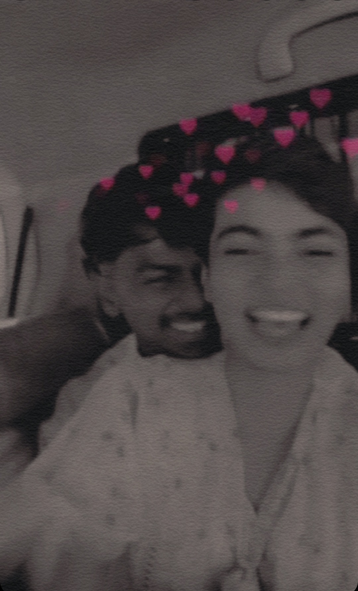

#vineegauravki

gv
Dear Teddy, this is for you only🤞💖
"Every moment spent with you feels like
a chapter from my favorite book 🥹,
and I can't help but want to write more stories together.🫀
Would you do me the honor of allowing me 🫶
to be your co-author in this😚
beautiful journey called life🥹💕?"
aap hamari jaan bun gaye ho mam🥹
play this and let's continue further
Please trun the page..
Hello vineeta ji .... it's 11:11 and aapko toh pata he hai iss time hum wish karte hai actually bataya he aapne tha iss time k baare me
...sooo mam aaj mujhe kiss baare me baat karna chahiye aapka meri life me ana ya meri life bun jana...as i always say mam ..you are gift of god to me
...aapke aane se ek alag he khusi hai ek alag he chamak aa gayi hai jeevan me ...or postive attitude toh kaafi aa chuka bai like itni khoobsurat
ladki meri girlfriend hai mera teddy hai sirf mera he hain yrr yrr like kitna jada mai khudko lucky feel karta rahunga aapko bata nahi sakta ...
Malum mai sochta hu koi mujhse sirf puche ki kon hai bhai yeh teri mai proudly kahunga munna hai Munna mera bacha hai ji 💞😽...
Vaise dekho na kitne dino se yeh banane ka soch raha tha bich me exams aa gaye or pata nahi kya kya ..
but finally aaj aapke samne mene laa he diya isse vaise mene socha hai ki iss book me mai apni dil ki baatein likha karungaa..
apni mulakte likha karunga taki jub aapka mun kare aap padh sako isse naa he chats rakhne ka tension na he kisi ko pata chalne ka vaise mam apne purane vale messages
bhi aage isme add kar dunga taki aapko sub mil jaye ...sub padho aapka jub mun kare tub padho ...or haa aisa mut sochna ki mai aisa sub karke sabit kya karna chahta hu...
it's just ki i love you yrr 🥺...
mai aapko apna sub kuch maanta hu orr yeh bhi mut sochna ki kyu keta hu itna efforts nahi yrr apke chahere pe jo ek smile aati hai na uske aage yeh saare efforts fike pud jate hai...haa smile se yaad aya dekho kal mene siddhi ko message kiya .. and further you know ki kuch help nahi li usse ....abhi aapko batata hu ki kyu help nahi li siddhi se ... actually mam mai chahta hu ki na aap jub mere iss work ko dekho tub jo aapka reaction ho na voh natural ho koi pre planned reaction ya answer nahi chahiye mam aapse ....as i say aapki ek sime he kafi lagti hai yrr mujhe or jub aapko pata chal jayega ki yrr yeh toh aisa aisa bana raha hai toh aab toh pahele se he ready rahoge aapke answer k saath...or vahi mujhe nahi chahiye...aap bhout bada answer naa do mujhe chalega... aap sirf pyar se i love you likh do na yrr 🥺 vahi mere liye sub kuch ho jayega ....yeh chiz mai siddhi ko nahi samjha sakta mam... isliye aapko bata raha hu and siddhi ko mere taraf se please sorry bolna ....usse bata dena ki aisa kuch galat na samjhe mujhe ..usse lekar mere mun me kuch galat nahi hai ....and haa mam mai aab apna yeh message yahi end karta hu ..kyunki aabhi or bhi aage ka kaam baki hai ....so at last i wish ki mam i love you teddy sabse sabse jada ...aapko thoda sa kr mangna chahata hu ... thoda sa or khudko mere naam kar dijiye 💖💞😚
vaise aapko yeh toh yaad he hoga meri shayari:-
Mai naa samjh hu thoda, mujhe mohabbat se apni samajhaogi kya ,mai sochta bhout hu, baaton se apni meri soch ko shant kar paogi kya , pass toh bhout se aa jate hain log par kya tum mera hath pakad k iss bhid mein mere saath chal paogi kya ,tum dure ho mujhse kya dur rahe k chand ki tarah mujhe pyar kar paogi kya, hame mohabbat ho gayi hai tumse agar kahu toh mujhe haa keh paogi kyaaise toh mene kafi shayariyan likhi hai aapke liye but yeh vaali thodi alag jagah rakhti hai kyunki iska answer mujhe 6th of march ko jo mila tha kafi wait karna pad gaya tha yrr
soo chalo mam iske aage se mai mere saari dil ki baatein likh deta hu aapke liye but pahele
say you love me the most :)
let me start with my very first dil ki baat
Pata nahi yrr kabhi kabhi Mai khudko itna unlucky feel karta hu na kya batau I think jo chiz yrr mai deserve karta hu the love I want from you woh mujhe kabhi 100% nahi milta and the only reason i think is ki apka past jo chize mai sochta hu ki i deserve it voh sub apko apka past karne se rokta hai.......i hate the guyz jinhone apko aisa bana diya...mun toh karta hai saalo ko maar du but the thing is ki jo hum soche voh hur baar ho Jaye voh jaruri nahi .....i know ki aap itne mature nahi ho aap khudke decision bhi abhi properly nahi le sakte even mai khud itna mature nahi ki kya batau yrr dil bolna bhout kuch chahta hai but voh words aate he nahi .....yrr life me naa BHOut saare persons aate hai or chale jate hai or unka kuch fark nahi padta but na yrr aap mujhe bhout aache lagte ho I don't know how this happened why this happened but truly I'm happy that ki aap ho mere life me ...and mai kabhi chahta he nahi ki aap mere life se jaao .. .mujhe even ek single mistake karne se bhi bhout dur lagta hai bus ek he ciz aati hai dimag me ki yrr kuch aisa mut kr ki yeh tujhse gussa ho .....>>>>>>next page
Aap khate ho na ki gussa hona chahiye jhagde hona chahiye aacha hota hai but na mam what i think is ki aaj yeh chota chota jhagda kal jaake kub bada ho jayega we don't have any idea .... and mai aisa birlkul nahi hone deta chahta aap chote ho age me no worries mai jitna bhi mature hu ya sorry aapse bhi jada immature hu but naa mai apke liye kab hi galat decision nahi lena chahta .... Aap daily nahi milte mujhse I don't have any issue aap hur baar mujhe love you nahi bolte I don't have any issue mai apko hur baar bolunga... because you are mine ....yrr mai na samjhta hu ki aapko mene uss din bhout ghai gadbadi kr dii mujhe vaisa nahi karna chahiye tha mujhe uss din vaise nahi karna chahiye tha, aaap bhout aache ho yrr ki like aapne mere baare me socha even though aap bolte ho you are not mature but i say ki aap bhout mature ho mujhse toh bhout he jada...mujhe nah pata nahi kabhi kabhi samjh nahi ata ki mai kyu itna sochta hu baadme yeh sochta hu ki yrr ki like mai sirf aapke baare me he itna sochta hu baki kuch toh mujhe dimag me ata he nahi .....and inn sub me jo chiz mujhe hur din dimaag me Ati hai ki yrr agar yeh mere life se chali gayi toh kya hoga yrr mujhe naa apko pane se pahele apko khone ka dur ho gaya tha ...kyunki na toh mai handsome hu na he koi mr.perfect or na toh koi aisi khoobi hai mujhme.....
mai he kar leta hu aap ruthogi toh mana sakta hu thoda bhout hasa sakta hu or shayad aapko thoda thoda gussa dila sakta hu jiske liye mai hamesha sorry bolna chahta hu mai yrr samjh nahi pata ki mujhe kya bolna chahiye kya nahi ..but yrr kabhi galat intention se nahi karta kuch bhi ............aisa mut samjho ki yeh kya ho gaya iss bande ko it's just mai thoda thoda karke yeh line's kafi dino se likh raha hu but kabhi complete nahi kar pata......
i love you ji jabse aapko dekha hai tubse 🥺
Tum voh chand nahi ho jo Suraj ki roshni pe itrata firta hai ... Tum unn jugnoo ki tarah ho jo apni roshni apne saath leke chalta hai... Shinaagr karke jo tum niklo logo ki najar firti jaaye ...tumhe buri nazar se bachane to bhagwan khud dharti pe aaye .. Tum hus do toh sawan ki paheli baarish ho jaye ...tum khamosh ho jao toh jaha me matam cha jaye ...or vineeta ji Tumhare roop bhi hazar hai....marte huve k liye amrit jaise or zindagi k liye khushiya jaise...ki agar majnu ne tumhe dekha hota toh bewafai voh laila se karta ....agar Shahjahan ne dekha hota toh taj mahal tumhare liye banta ..... Jaise bhagwan shri krishna ne apna mukh kholke sara brahmand dikha diya tha ...vaise he tumahari aankho me mujhe sara universe dikhta hai...and Mai yeh nahi kahunga ki tum ko aasman se aai hui pari ho ya farishta hoo....but na yrr mere liye tum sub kuch hoo.....
Yeh bheega bheega sa mausam , Yeh titli phool or shabnam Chamakte chand ki baatein , Ye boonden or barsaate Yeh kali raat ka anchal , hawa me nachte badal Dhadakte mausamon ka dil , Mehekti khusbon ka dil Yeh sub jitne nazaare hai, Kaho kiske ishaare hain ? Sabhi baatein suni tumne , Fir aankhe fer li tumne Mai tub jaakar kahi samjha , ki tumne kuch nahi samjha Main kissa mukhtasar karke , zara neechi nazar karke Yeh kaheta hu aab tumse , mohabbat ho gayi tumse
my very first day of wish
Hello,,, it's 11 11 maybe aap padhai kar rahi ho yaa shayad aap break pe hooo.. tabhi aap yeh message padh rahe hoo... So vineeta jii .... Aaj toh chaliye aapka first paper ho gaya hopefully aacha bhi gaya hoga...apne bataya 10 Mark's ka nahi likh paye no worries 🙂.. kuch nahi hota...soo mam aaj toh humne baatein jada ki nahi ...... And mai baar baar messages karke apko disturb karna nahi chahta.. because ek galti and aap gussa ho sakte ho and that's not good for me... so like at a time mai likh k send kar de raha hu... jub aap free ho jaoge toh padho.. you know mam aapke pahele mujhe kabhi kisi ne bataya nahi tha iss 11.11 concept k baare me ki like itne time wish karna chahiye... Aapne bataya toh mene like apke bataye huve time me apko he mangna shuru kr diya... Just some nonsense things in other's point of view...but i really thought ki aap mujhe mil jaoge ... And shayad aap mil bhi gaye 😅😅 shayad .... Maybe mai galat bhi ho sakta hu apke mun ka mai kaise bata sakta hu...and apne abhi bola bhi na ki pyar nahi karti 🙂 toh jada apne mun me ladoo nahi fodne chahiye ki yrr jaisa tu soch raha hai vaisa he hai....
Mam aaj na like mujhe samjh me nahi aa raha ki mai jo aach bina bataye aapko dekhne aa gaya voh sahi tha ya galat but it was just ki mujhe apko dekhna tha even mene yeh tak socha tha ki agar apke papa ya didi koi hoga toh mai baat bhi nahi karunga .. mera friend mujhse puch raha tha road pe ki bhai usko pata hai kya tu aane wala hai milne and i was like ki bhai usko nahi pata voh puch raha tha toh kyu jaa raha hai..and i was like inside ki bhai tujhe kya batau aab kyu jaa raha hu and mene usse itna he bola ki bhai buss kismat k bharose jaa raha hu kyunki mujhe late bhi ho chuka tha jub mai nikla ghar se toh like it was 1:50 😑 toh mai bs actually tha toh kismat k he bharose..... mai jub vaha phoucha na toh koi dikha nahi toh mene like socha ki lagta hai chali gayi yrrr 😅 i missed.. but mene dekha ki it's just 2:05 abhi bhi umeed hai mene dono gates check kiye college k and ek gate pe parents the ... Toh i start to wait there mene pahele dekha bhi ki kahi didi or papa toh nahi hai apke .. and then aapko call kiya jub chuta ... And then fir hamari thodi si baat chit hui ... Kafi thodi siii ğŸ¤.. but it was okay and then mai leactures me gaya i was still missing you...in the leacture...and then fir mai friends k saath kala talav chala gaya ... and vaha apse thodi si baat chit hui but then fir didi aa gayi 😅 .. and mam mai uss ladki ko nahi dekh raha tha really... And mam yrr yaad toh bhout aa rahi hai apki but koi na aap he bolte ho na intezar karo verma jii intezar ka fal mitha hota hai...
Hello mam it's 11:11 again 😌 why don't i just wish you........sooo aaj toh baatein jada ho nahi paa Rahi..orr meri bechaini badhti jaa rahi uper se yaad kuch jada he aa rahi 👉🏻👈🏻....mun toh bhout kar raha hai ki tumhe taunt maaru nir daya nir daya baar baar bolu.....but at last aap bhi majboor hai ....you know what mam mai daily sochta hu ki yrr return milna hai bhout sii baatein karni hai ....orr baatein karte karte aapki aankhon me dekhna hai ...i want to live that moment again or pata nahi kismat mera saath kyu nahi de rahi ... Kal aacha khasa milne ka plan tha or exmas aa gaye...thodi umeed thi ki 3 baje exam k baad milunga jaake fatak se but at last moment timings bhi badal gaye.. i don't know why but kyu aisa ho raha hai samjh nahi paa raha hu Dil milna chahta hai kismat Milana nahi chah Rahi.... Jada aisa bolke emotional nahi karunga ğŸ¤ğŸ¤.. padhai pe dhyan do exam hai kal... You know mam aaj din bhout boring sa gaya or shaam bhi aise he raat ho gayi... Dil or dimaag dono ek saath ek jaisa soch rahe hai ..bus ek he awaj aa rahi "bhai uski baaton ki kami lug rahi hai ".... Yrr na baatein kitni bhi bana lu pur apke ki kami nahi puri kr sakta ...or sidha sidha bolu toh "I'm missing you " shayad apko yeh pyar ki bhasha me samjhe na toh bata du ki yrr "apki bhout yaad aa rahi hai 🥺" yrr or ek raaz ki baat bolu toh "I want to hug you tightly " ,
bus apko paas lake kahi dure nahi jane Dena hai....vaise umeed hai aap free time me iss message ko padh rahi ho...kyunki filhaal abhi k liye toh studies jada important hai..chalo mai bhi padh leta hu ...mera bhi exam hai 😅.... And and mam i love you 😘......
. . . . . . . . . . . Hope padhte padhte aapke face pe ek choti sà smile mene laa he di hogi 👇🻠. . . . . . . 😊Love you vineeta jii 😊💕💖💕
It's 11:11 mam ,, time tooo wish you again mam.....yrr aaj humari baatein bhi hui kafi call pe bhi humne baat ki but na kuch adhura adhura sa lug raha hai....lagta thodi baatein or kami si hai ...but koi na I'm happy ki atleast baatein toh ho Rahi hai and thodi bhout meri bhi galti hai ki mera mun bharta he nahi kitna bhi bol lo ... actually baat karne ki he baat nahi mun toh yrr apko leke kabhi nahi bharta .....mujhe na like aachi lagti hai apni yeh aadat mun na bharne ki ..sochta hu kabhi bhi apse mun na bhare hamesha thodi thodi si kami mehsoos hoti he rahe ... hamesha apko thoda thoda sa mangta he rahu 😅 or aap hamesha iss duva ko qabool karte raho........mam like aap bolte ho ki ladai honi chahiye.....yrr mai bolta hu ki mujhe aapse kabhi ladna he nahi hai kabhi nahi......aapko mai kaise batau yrr ki mai apko kahi jane nahi dena chahta ek choti si bhi wajah dena nahi chahta ki hamara uss chiz ko leke jhagda ho...nako jhagda kabhi bhi actually apko mun kare na toh mujhe thoda daat diya kro bewajah bhi daat do chalega non-issue I'll handle your anger always ...but na yrr jhdaga mut hone do ....mai na bhout darta hu iss jhagde se mai kabhi chahta nahi ki yeh jhagda ho kabhi nhi.....aap bolte na ki noo ..nahi....nako..vahi vali nhi ....... actually naa yrr baat jhagde ki nhi hai baat apko khone ki hai...
or pata nahi kyu kismat dekhne nahi dena chah Rahi...yrr ek baat batana mam free hoke ki apko kaisa feel hota hai yeh bade bade messages dekh k....kyunki maine kabhi aise kisi ko bheja nahi soo like I've no experience of it......and personally I'm happy ki aacha huva mene kabhi kisi ko bheja nahi I'm doing something new to my special one 💜..... Yrr mam mai na such bolta hu ki mai bhale he unn ladkio ki if leta hu but yr suchme apne nahi leta hu... nikita ka bhi same scene hai aab voh bolne aati hai toh bolta hu varna yrr Message bhi nahi karta and message aaya toh ignore karna bhi aacha nahi ek time pe kafi baatein hoti thi hamari voh kafi kuch share karti thi suggestions mangti thi...but na mam saachi vala bolu toh uske aage nothing mera uska kabhi bhi aisa kuch nahi huva or na ho aab toh jada he aacha hai....mai na Malum ladkiyon ko batane laga hu ki like yrr now I've a very beautiful girlfriend even voh ladkiya bole ki mujhse bhi jada sundar....ek he answer ji haa apse bhi kafi sunder and iske aage baat he khatam ho jati hai... Yrr time miss ho gaya 😫 but mujhe or bolna hai.....mun he nahi bhur raha hai kitna kuch bolu apko...yrr chand ko dekho na asmaan me aaj uske agal bagal taare he nahi hai lagta hai uss chand k bhi exams chalu hai or taaro se baatein aaj not allowed..... Mam mai na dur raha hu ki mai soo na jaau atleast kuch toh baat ho jaye kuch toh.... Yrr but mam mai bhale he thoda late ho gaya wish mangne me but yrr mai toh exact 11 11 pe apko he yaad kar raha na
Time missed by two minutes 😫 likne me kuch jada he kho gaya mam aap jeet gaye na i accept you are the winner chaliye aab toh online aa jaiye ... Hum thodi si baatein kar lete hai thoda sa apko bus itna puch lu ki apne khana khaya kya ...kya khaya .... Didi ki kuch baatein kuch aap batao kuch mai sunu .. .
jisse mai pana chahta hu but khatam hone se dur raha hu ... Return mile ya naa mile kya pata..... Baki saari ladkiyan mam ladkiyan he hai but aap toh mere teddy 🧸 ho na cute sa ,,,... mun me aa raha hoga ki panchat kitna bhi ho jaye chadana nahi bhulta 😅 .... Actually nahi bhulna chahta itni tareef karna chahta hu na ki saala koi or aake kuch bole na toh aapko farak he na pade uski baaton ka apke mun me bus itna aaye kya tu bhi suni hui line bol raha hai tujhse aacha toh mere boyfriend hai 🤠khudki bhi thodi indirectly tareef kr li .....mam you know what yrr apke itne photo's hai mere pass mai daily dekhta hu bhale he sub na dekhu but ek na ek toh daily ka fix hai .....or agar dekhte dekhte koi aa jaye biche me toh usko bhi dikhata hu le dekh,,,,dekh yeh meri girlfriend hai kitni pyari hai na...😻......and mam yeh padhke yeh mut bol dena ki tum sabko meri photo's dikhate ho mai nahi dungi aab na na aisa na karna aaj Thursday hai after two days return Sunday...and I'm waiting for new one's ğŸ˜....... hopefully aap firse uss din thoda tadpaoge but de doge.... .yrr na like ek andar ki baat batau na toh aacha lagta hai mujhe bhi jub aap tadapte ho .... fir bhale he voh kisi bhi chiz k liye hoo BHOut aacha lagta hai apko uss chiz k liye manne me ...haa bhale he mai apko bol deta hu nir daya kitna tadpate ho xyz but saachi andar se na bhout bole toh bhout he jada happy hota hu mai.....like yeh toh huq hai apka hume tadpana isme galat or alag he kya kar rahe ho aap........
Mam mai na apke saath itne saare khwab dekhte hu na ki agar usse pura karne jaau toh ek din toh mere liye kafi matlab kuch jada he kum pud jayega ...kaash voh apke saamne vala ghar mera hota 🤠bhale he milna nahi hota but kum se kum apko dekhta toh vaha baith k ..... Mam ek question aa raha hai mun me puchunga nahi direct kar he leta hu ...soo mam like is there anything about me jo apko pahele pasand nahi aata tha ya aya ho but now you apko aacha lagne laga ?... Anything...............yrr na mam bhale he hum dono jun ko ek dusre ki life me entry late mili hai ....bhale he aap mere first love nahi ho paye but na mam I'm going to make you.. my first' female friend duniya ki nazro me baki you are..my mam,my girlfriend,my love,my teddy,my heart,my feelings,my emotions ❤️ even my enemy also.. first enemy with whom I'm in love ...haa but enemy bola iska matlab yeh nahi ki jhagda karunga ya apko karne dunga no,nahi,nako...kabhi nahi...pyar chahe aap jitna krlo no issue jhagda nahi karna kabhi..... Aap kal bol rahe the na ki agar verma ji galti meri hogi toh bhi aap sorry bolne aaoge kya..... ji mam mai bilkul aaunga mai khone nahi dena chahta apko ... vineeta ji vaise toh mai daily daily kuch na kuchh apki tareef me bolta he hu ..soo mam un baato ko thoda sa seriously liya kro aise he nahi bolta rahunga na kuch toh socha he hoga na mene.....vaise mam bhul gaya tha ki padhai bhi karni hai chalo mai padhne Jata hu....
Hope k aap free time me iss message ko padh rahe hoge ...... Mam 2 lines padhi thi mene aaj ki " "Kahan se laaun woh lafz jo tujhe sunai de, Duniya dekhe chaand ko mujhe to chande me bhi sirf tu he dikhaai de.".... Love you Vineeta jii 😊💕💖💖💕🤠and mam mai yeh kabhi nahi bolta ki mai itna bada message apko likhta hu toh aap bhi mujhe like reply bhi kuch bada he doo ... No aisa kuch nahi apki ek smile bhi kafi hai...
Hello mam it's 11 11 again 🤠aaj mujhe lagta nahi ki mujhe bolne ki jarurat hai meri khwahish... shayad aapko pata chal he gaya hoga aab tak what i want....soo mam kal apka maths hai ...or mujhe jaha tak pata hai ki apka bhi maths aacha nahi hai...soo aaj like apko jada disturb karne ka chance he nahi... isliye chaliye thoda sa bol leta hu .....vaise toh mene aapko aaj ka bataya he jo huva shayad apko vishwas he nahi ho raha hoga so that's good ğŸ‘ğŸ»...keep it up ... because vishwas karke bhi kuch fayda nahi mera kisi or k pass ya kahi chod k jaane ka bilkul mun nahi .......aaj na mujhe thoda dur sa lug raha hai ki aap naraz hone wale ho kyunki mene aapko like aaj ek photo bhej thi or usko delete bhi kr diya ..but i believe ki kuch gadbad nahi hogi....🤗 .....mam yrr apne toh message karne se mana kr diya 🙠koi na aaj kuch bada nahi karunga varna aap bologe mera sunta nahi soo aaj chota he thike because you are my cute sa teddy 🧸 and mai apka sunta hu bus thoda yaad jada krta hu koi na padhlo aap jaate jaate kuch lines mili thi jo mujhe laga ki aaj ki conversation shayad inn words me apko samjh Jaye kyunki jada bolna nahi hai ......
next>>>>>
....and mam aap kitna bhi kahe lo ki 11 11 pe nahi karna but yrr mangna toh mujhe jarur hai apko...🤠Mam mam ek last toh bhul he gaya subha se soch k rakha hu bhejne k liye...
. . . I said i love you in all available languages that's spoken by human on earth
Hello vineeta jii 😊 ... it's 11 11 again ...... Time to do a wish and the wish you already know ....but yrr chalo na aaj mai wish me ek point or add karke apko thode se thoda sa or jada mangna chahta hu ...kitni ajeeb baat hai na log kahete hai ki wish karo toh kabhi kisi ko batao mut ..but mai toh daily bata deta hu .....yrr vineeta ji apko ek dum raaz ki baat batau aaj tak kisi ko nahi bataya actually na jubse mera or Gaurvi ka breakup huva tubse na mene aisa thaan liya tha ki aabse kisi ladki ka account hack nahi karunga mujhe nafrat si ho gayi thi hacking se mujhe kafi time laga samjhne me wapas ki hacking ka kya he lena dena ulta hack karne se mujhe sachai he pata chali .. but fir bhi mene apne mind ko vaise he rakha ki kisi ladki ka hack mut karna uske hone ya naa hone se tujhe koi farak nahi padna chahiye...usko jana hai voh chali jayegi chahe tu kitna bhi koshish kar le....but na yrr aap un ladkio me se nahi ho mere liye mai Kasam se bata raha hu ki I've feelings for you aapke hone se bhi mujhe fark padta hai i feel happy feel like ki mai firse complete sa ho raha hu ...orr aaj ka jo huva uske liye toh mai sorry he bolna chahunga apko actually mera mere dimag se control chala gaya tha ...aap sochoge yeh kaisi baatein kar raha hai kaise koi control kho sakta hai but mam sachi aisa ho jata hai mere saath mai kuch nahi kar pata mai blank ho jata hu ...
or aaj aise he huva mujhe na bhout bhout bad feel ho raha tha mujhe aisa lug raha tha ki aapbhi chale jaoge mujhe chodke mai fir vaise he ho jaunga mai kafi jada sochne laga tha or such such kahu na toh bus itna he aa raha tha dimaag me ki gaurav kr koshish kar hack return agar apko nahi karta toh uss ladke ko karta but na yrr mam sachi mujhe vaise kuch nahi karna tha ek choti si galti ho jati toh pata nahi kya problem create hoti kya hota pata nahi isliye mene aapko direct puch liya mam uss ladke k baare me socha jo hoga clear ho jayega but unfortunately dimag or jada khote jaa raha tha situation out off control ho rahi thi type karna ka bilkul mood nahi kar raha tha and aap achanak se voh rone wale emoji bhejne lug gaye jo ki mujhe kabhi majur nahi tha isliye mene voice me apko samjhane ki koshish ki mere saath kya ho raha hai actually yrr jub yeh hota hai toh na samne wale ko batane ka mun nahi karta tha BHOut saare thoughts aate hai ki samne wala kya sochega apne baare me isliye mai chup chap ho gaya tha but apka Voh rone wala emoji..... sorry yr really really sorry 😠hope so ki aap samjhogi thoda sa mujhe ........malum aaj bhi bhout mun kar raha tha ki aapne teddy ko hug kru hug karu but socha ki Teddy public me he fatke dena start kar dega ğŸ¤....soo like mene yeh baat boli he nahi 😅 chalo koi naa aaj jada bada nahi karta message....vaise mam ek last question mujhe leke koi aisa dur tha kya mam apke andar jo aab nahi hai ? .. and once again sorry jo bhi aaj huva uske liye and the wish "be mine always 💖 i love you ❤️".....
Hello.......vineeta ji..... ....time miss mam but uss little space me vahi time hain.....yaar apne kya sahi concept bataya hai like daily issi bahane aapko thoda dil se yaad bhi karta hu ...koi tention he nahi ki kabhi bheju ek fix bhi hai duva k sath dil ki baat bhi ho jati ...... Yrr na mam sachi aaj sabse pahele toh mai doper ki baat karna chahunga yrr like mam sachi i love you..i just love you 💕 sachi yrr bhout he jada kya bolu matlab samjh he nahi aa raha khusi bolu feelings aai bolu kya bolu kuch samjh nahi aa raha ...like voh uss time jo mee feel me tha i was just missing you alot...aap bol rahe the you are missing all that ... But mam i just missing you alot..yrr aisa feel ho raha tha na ki apko bus hug karu ....bus....yrr like no words itni khusi thi ....or chahere pe smile 😊 behisab thi...itna he bola sakta hu mam you got my heart my cute sa teddy 🧸😚...aap bolte ho na voh.....i......lovesssss.....youuuuuu very very much .......aise he raho hamesha mere saath duwa hai........bus aaj mujhe iske aage no words.......and mam i missed you more than you 😊 and thank you for that missing your dimple 👉🏻👈🏻 maine toh like socha nahi tha voh dikhta bhi hoga mujhe laga friends chadate ...but apne bola or aise time pe bola jhut ho he nahi sakta tha once thank you.....ğŸ’💠And main thing i love you ........ Mam yrr time miss ho gaya but i still want you everytime 🖤
Hello mam it's 11 11 again .....i love you alot mam 💕💕 ....... Malum yrr you are already mine....but fir bhi aaj mai aapko paane k liye laga huva hu dekho naa raatko duwao me or abhi 6th of March koo......aap mere ho but yrr yeh aaj mai zeel se baat kar raha hu toh aisa feel ho raha hai ki sachi yrr isne mana kar diya toh,😂😂....like mai toh return darne laga ....kya he feeling hai yrr yeh Means apko aapse return mangna ...jubki aap mere he hoo.....yrr like soch k kya he feeling aati hai ğŸ¤ğŸ¤ ki mai uss din kya karunga ... pahele khudki smile control karunga ki sharmana rokunga... Means like ek alag he scenario hone wala hai... I'm very very excited for that ...mam like apka kya reaction hoga aapke mind me uss time kitne thoughts aayenge...kya pata aap laal ho jaao ..😅😅.....and side me apke dono friends unka kya reaction hoga .....yr mam malum aaj jub main zeel se baat kar raha tha starting me like bhai uske questions the mujhse aapko leke was like ki maine galti se vineeta ki badi bahen ko toh nahi request daal di yrr like kitna fikar karte hai yrr voh apki ... Too good...uske questions mujhe sochne pe majboor kar rahe the .....uske hur question ka mai ha ha answer de raha tha ... Yrr sacchi apki bhout fikar karti hai voh.... Aacha laga jaan k mujhe ......mam yrr like aap toh apke friends se he jealous ho gaye yrrr......
extremely sorry mam ...mujhe pata hota aisa kuch hoga toh mai jada nahi baat karta usse... ...hey hey mam listen ...... Take your ears close to me..and listen...I...... love...... you........my teddy........hopefully apne vaise he suna hoga jaise mene bola and you already know how my teddy is ..... there's no comparison so like mai use kisi k sath compare nahi kar sakta .........mam yrr I'm missing you 🥺 I'm missing those tomatoes......yrr unka taste real vale se bhi aacha hoga .......i want to taste that and aap taste he nahi karne dete ........mam aaj toh humne jaada baatein nahi ki and zeel ne bhi mujhe samjhaya ki exam hai jada disturb mut kro ....🤠.....mam it's 11 11 be mine always always...and i love you......ğŸ’
Hello mam 🥺...... it's 11 11 again time to wish you...... missing you mam very badly .......but disturb nahi karna chahta mere chakkar me mun nahi lug raha studies me apka ...and abhi study important hai ......mam yrr apka he message aa gaya tha Abhi batao mai yaha apko he yaad kar raha hu and aap message bhi kar rahe ho or mai apko bata raha hu ki mam i was really missing you 🥺 and you are not believing in it....😅 ...mam aap na sacchi me bhout cute lug rahe ho chota Teddy 🧸 lagte ho aap mujhe uss image me .....apki smile mam uss photo me choti si....kitniiii pyari lug rahi hai and look at those .....my favourite tomatoes 🍅....like mam uss photo me aap thode nervous bhi ho saath he khusi bhi hai....such a nice combination ğŸ’..,....mam yrr ek sachi baat bolu kya mera bhi mun nahi tha ki aap jaao apne pritam and friends bola na toh yrr voh idea he mere mun se utar gaya ... Mujhe na yrr sachi bolu toh aab pritam nahi aacha lug raha jaisa voh pahele tha aab uski image mere mind me vaisi nahi hai....mene mam aapko bataya tha pahele ki aab thode dino me pritam didi ko force karega ki accept karne bol ...dekho usne kiya....mene yeh bhi bola tha ki didi bhi apko bol sakti hai accept karne dekho didi ne bhi bola ...or mam as it mene bola tha iss chakkar me didi or pritam me jhagde chalu ho jayenge dekho ho gaye ....
and the reason is ki friend ship....pritam uske friend ka soch raha hai ki uske liye aacha hoga ... and didi apke liye soch rahi hai ki apke liye aacha hoga because voh dono friends and aap dono ....pritam ne jaise taise didi ko mana liya hai bhale he voh bahana jhagda he kyu na ho..... and isliye didi chid gayi hai appe aap nahi rahe ho isliye.....mam uske aage ka mai sochna bhi nahi chahta or bolna bhi nahi ......bus mere mun jo raheta hai mai bolta hu.......baki all decision is yours no force 😅....dekho na mam mai yeh message kabhi ek saath complete nahi kar pata firse aapse baat hone lagi thi....malum aapka message ata hai na toh mere mind and heart aapas me jhagdne lagte hai ki pahele yaha pe sentence complete kar fir reply de ... But at last dono ek chiz pe aake ruk jaate hain - dil ki baat baadme karte rahena aabhi reply de fatak se ....mam pata hai aap na mujhe bhout bhout cute lagte ho....... Jub aap mere saamne rahete ho na andar se bhout feeling aati hai ki bhai uske dono gaal pakad k khich iske saath Masti kr ....isse thoda sa tung kar but pyar se ğŸ¤..... hopefully aise mai ek din pakka karunga ...ha but permission always needed.....vaise unexpectedly karunga toh jada aachi feeling aayegi ....vaise maine pahele he bata diya hai indirectly ki mai aise kr sakta hu kyunki mera huq hai ....toh gussa mut hona kyunki you are my cute sa teddy 😚
ufffffff...yrrr mai yeh likhte time apko itna jada miss karta hu na i can't explain....Mam yrr kuch lines hai ki ..Jaise vineeta ji tujhme aate Hain na aane ke bahaane, aise he bahaane sena jaane ke liye aana kal se humare Zindagi me...i love you....💖💖😘💕
once again
Hello mam ..... Its 11 11 again....pata nahi mam yeh message bhejne k pahele apkse saath kya baat kar raha rahunga...but mujhe abhi sirf apni feelings likhni hai...yr mam aaj na bhout maja aya .... mai such boou na mam toh ek time pe mai bhi bhout jada Sharma gaya bolne k liye mai khud nervous ho gaya ....but yrr bhale he kafi time laga but yrr mam voh waqt lajawab guzra ....like apka jub apne mujhe pahele baar dekha tub aap kitna aacha muskuraiye the ...apka voh mujhe hii bolna mera apko hello bolna wah kya waqt chal raha tha like hum dono ko pata tha ki aab kya hoga ,,but voh moment itna enjoyable hoga yeh bilkul nahi pata 😚😚😚😚...yrr like kitna maja aa raha tha ....mai khud sharmane lug gaya yrr....bich me or malum aap kitne jada sweet lug rahe the mujhe .....mai apki aankho me dekh raha tha yrr aaj unme ek chamak dikh rahi thi ek khusi dikh rahi thi......waise yeh meri aankho ne dekha ....apke andar k thoughts I don't know ğŸ¤..... Aaj pata hai mam mujhe na aapke saath thoda time spend karna tha ...thoda nahi yrr thode se thoda jadaa.....aaj aap na mam bhale waha uss time apke dono friends he the but aaj aap mere liye puri duniya k samne meri bun gayi hooo......❤️😊....like mai aab mere pass officially duniya k samne aab girlfriend hai ...... aap waqt mera hai... intejar khatam khwab pura ...
yrr aapko mujhpe daya nahi aati kya thodi bhi ...yrr aapko jara bhi nahi lagta ki chalo ek kiss de he du jubki apko already pata hai mai kitna tadapta hu uske liye...aap bhi haseen samay pr message karte ho .........toh kaha tha mai ki mam apke mun mr ek bhi baar nahi ata kya ki bolu gaurav kiss kare... Kiss karoge ...ek kiss duuu.....yrrr mera kitna kitna mun karta hai mam like apko kya batau ....agar koi mujhse aake puche na ki bhai sabse muskil kaam kya hai tumhare liye mai yahi bolu usko ki bhai meri girlfriend samne hote hue khudko control karna .......like na mai sochta hu ki bhai koi toh award do yrr aake mai itna jada control karne laga hu ...... Malum mai apko tung karne se jada apko kiss karne me hai...aap mere samne ho mai khudko aage karu thodi nichi nazar karu or bus .....yrr aap mujhe hur jagah rok lete ho 🙂 kya sahi time me message karti ho.....mam pata hai aaj jub maine apko vaha side me shayari boli yrr ...mam ...aapka na reaction dekhne wala tha...bhai sahab...kya he red hue aap...mai na dur gaya ki aaj toh yeh tomatoes fute lagta hai 😂...itne red hue na yrr aap....i swear yrr mene bhout khudko control kiya aap jaise bhi samjho but bhout jada control kiya even yrr apke voh gaal toh mai pakdna he chahta tha ..but aab tak publi janti nahi thi 😅 varna zeel siddhi samjh lete ki yrr kaisa ladka hai haa voh boli nahi or yeh uske gaal pakad raha hai....mam yrr aap na mere Teddy ho ...apne pucha na who am I...you are my teddy teddy teddy...
.and i love my teddy more than my girlfriend ...kyunki mam girlfriend's bhout thi teddy koi nahi tha......taare aasamaan mein hee chamakate hain,....baadal itane door hain, phir bhee barasate hain,...ham bhee kitane ajeeb hain, vineeta jii tum dil mein rahate ho,......aur ham tumase milane ko tarasate hain....i love you ❤️
Hello mam it's 11 11 ....hope soo ki iss time pe bhi yeh concept work karta hoga ......mam kitna tadpate ho yrr rata me bhi baat nahi hui barobar or aab subha ki dopaher hone aai .....mam i love you ❤️...itna nako na tadpao mujhe ....yrr mai overthinking ki dukan hu ...or mujhe sochna sirf aapke baare me aacha lug raha hai yrr ......or aap ho ki mujhe sirf tadpate he ho ...i don't know why kyu karte ho aap aisa ...aap kahete ho ki bhout maja ata hai thik hai yrr maje kro but yrr mere dil pe thoda sa toh rahem kro...you are my teddy na ...so mera he Teddy mujhe itna tadpayega toh kaise chalega ...the only thing i wish is "you" bus or kuch nahi ek tum ho mere pass or ek tumhare saath chahiye hamesha....or ha thik hai thoda sa tadpao but thoda sa he .......
Hello mam....what a time yrr ...11 11 ....daily apko thoda sa or maangne ka mauka mil jata hai .....mam ....like mai apko kya bolu pahele...love.. you..bolu ....ya sorry.....chalo sorry prefer karta hu .... I'm sorry mam subha k liye... like such such bolu na toh suchme mujhe laga aapki didi hai isliye mene sirf check karne k liye utna kiya .....but mam it was you my teddy 🧸...or mujhe yaar bhout galat sa feel huva isliye mene aapko ussi time batane ki koshish ki ....but mam yrr mujhe thoda sa or dekhna tha mere teddy koo ...the time was ki my teddy is in her favourite colour dress.. sorry night suit ya jo bhi boote ho usse mam ... sorry mujhe abhi uska voh perfect naam nahi yaad aa raha hai....yrr mujhe bus thoda sa or dekhne ki ichcha hui.. isliye mene return aapko link bheji but mam second time was my personal mujhe dekhna na mere teddy ko ....and mam like pura toh nahi ..but aapki voh zheel si aankhein dekhni mili ....or hum thoda kho gaye ....but at last mam ki aapko pura bata diya ....and mam jada tention mut lena return nahi hoga ... I'm really sorry for that ....but na mam galti kar k bhi dil ko sukoon sa mila .....thodese apke voh majedar questions ...thodi si aapki confusion...aur bhout saare mun me khayal 😠leke aayi thi aaj aap call pe kasam se maja aa gaya ... .and mam please uss chiz pe Gussa mut hona ...kyu ki yrr tum he ruth gaye toh kisse baat karu mai .....
logo k pass honge babu sona mere pass toh bus mera ek he teddy hai or voh bhi gussa ho jaye mujhse... kabhi manjur nahi mujhe ... sorry once again my teddy 🥺...i really love you 💓...and I'm really sorry yrr apko mujhe vaise kiss k liye baar baar nahi puchna chahiye ... sorry yrr maaf krdo apka mun nahi mujhe koi problem nahi aap aaram apka time lo ...but mam kiss do ğŸ˜ğŸ¤....nahi do bolunga seriously le Liya toh mera kya hoga ...i don't want any second option... I'll wait ,,control he hai na thoda sa kar lunga...haa but mam fir jub lunga toh ek doo nahi lunga 😘😋...kiss dene ki maarji aapki kitni leni voh marji sirf meri ....kyunki mam aap he kahete ho na intezar ka fal mitha hota hai...or mera fal toh laal ho jata hai..mujhe yeh fal hamesha chahiye....be mine always vineeta jii.... hamesha please aap Mujhe chod k mut jana please 🥺 yrr seriously aapse mohabbat ho gayi bhout jada ...... galtiya hamari maaf kiya kro ...fir bhi na mun maane toh daant liya karo .. but naa jaane ki baat kabhi na karo....apko malum vineeta ji kal hume sirf one month pure honge but naa sachi batau toh aisa feel he nahi ho raha ki sirf one month huve hain...yrr voh word nahi aa raha mujhe yrrr...hope ki aap he samjh lo .....or jo aap samjhoge mam hume manjur hoga ..... i love youuuuuuuuuuuuuuuuuuuuuuuuuuuuuuuuuuuuuuu ....my teddy 🧸😚🥺
mene na yrr utna sachi paya bhi nahi hai apko jitna aapko khone se dur raha hu pata nahi yeh dur kyu hai mujhe ....teddy suno na please tum kal se kala tika laga k niklogi ...kisi ki nazar lage .... apko pata mam mai hamesha bolta hu kal kisne dekha hai ..yrr mam bhagwan kare aapko meri bhi umar lug jaye.... Or jitni umar aap mere saath raho bus utni he umar mere hisse me aaye......you are being to special for me vineeta ji 💕 aap kabhi mujhse gusaa mut hoiye ... please 🥺....or mam apke ghar walo ko kal jaake pata bhi chal gaya ...or unhone aapko kahi fekh diya 😅 sorry matlab kahi bhej diya toh please mujhse contact karna please ....mai hamesha tumhara wait karunga always....haa bus matlab jub tak shadi na ho Jaye meri ...haa but kal kisne dekha hai ğŸ¤... teddy... Shayad yrr message pata nahi mujhe chota lug raha hai but apko kahi bada na lug jaye pur thoda sa or bolne ka mun hai ...and teddy toh mera hai mujhe koi permission ki jarurat nahi ...mam aapka he message aa gaya tha ...🤠...or hamesha ki tarah dil ki baat baadme hoti rahegi...pahele teddy chahiye...and last but not the least mam I love you.... duwa qabool ho jaye pahele pahele se toh aap mere hai he ... thodse or mere bun jaye ...💕
our first month completed
you wished
Hiiie..sir... Happiest 1 month babeee 😚..And manyy moree to goo with you..💙..I really really really really loveeee youu soo much my boyyy ğŸ¤ğŸ™ˆâ™¥ï¸.. You are the one of my special and fav person in universe 🌎.. Please stay with meee forever ♾️... andd haa mekoo kbi EX ka tag naa denaa..yehi wish karungi mee!🫠..I m luckiest girl to have a man like youu 😩...jitne bi mere bf thee..yr app un me se sbse jyada alag hoo..and mere heart mee.. day one see.. special place haii for you..and I'll never ever replace that place with anyone else ğŸ˜..day by dayy i m getting more mad in you...ek limit se jyada e ishq hoo gya hai tumse ğŸ¤..now don't say.. bhot dialogue maare hoo 😂...andar se aari hai saare baatein ..!!..meko samne se jyada pyaar jatane nhi ata..bs meri ankhon se samjh janaa 👀... I can't express my feelings in wordssssss..apke Jaise bade bade aur ache msgs toh nhi bhej skti...🤧.. sirf I'll send you big hugs and kisses 🫂😚💋.. Always remember...I lovee you alottt Gaurav jii🙈💋..soo stay always mineee and forever vala myy MAN..!😚🫶🏻💕💚🖤💜
Hello mam ....time to make a wish...😊.......vaise logo ko apni wish batani nahi chahiye na mam ...but yrr aap toh mere teddy 🧸 😚 ho.........apse kaisa chupana .....mam i wish ....,,,ki aap aise he mere saath hamesha raho...hur roj mere bus thode se or bante raho 😚🫣....ek umra beet jani chahiye aapke sath ğŸ’.... ......vaise toh mam kal milne ki bhout khusi ho rahi hai ....like andar se naa bhout happy happy vali feel aa rahi hai....kal milna hai apse ğŸ¤....thodi baatein karni hai.... thoda sa jada aapko dekhna hai .... thoda sa aapke saath waqt guzarna hai..... I'm waiting for this day From 6th of March....or kal khwaish puri hogi 😊....... vineeta ji 😅....i love you 😚😚😚😚😚😚.....so mere cute se teddy kal thoda.. sa jaldi ana .... Kuch khwaish puri karni hai.....vaise toh mera yeh teddy mujhe text pe mujhe bolta raheta hai ki apko permission ki kya jarurat apne teddy se koi permission leta hai kya.....but yrr teddy 🥺....i want your permission mam .... I want to kiss you...teddy....yrrr bolna nahi chahiye but bol raha hu.... please 🥺🥺ek se jada dena kyunki mai ek pe nahi rukne wala ğŸ˜....or yeh nahi bolunga ki gussa mut hona kyunki mai nahi rukunga or gusse me ho aap or gusse me aapko kiss karne ka kya maja aayega ....
....kya feeling hogi voh ....gusse me aap kitna angrily kiss karoge ...ya or jada sweetly kiss ho karoge yrr like soch k he ek alag si bhuk lug rahi hai 😋😋😋...waise mam aap bhi ekdum time pe message karte ho matlab aapko kiss karne he wala hota hu apni baaton me or aap break laga he deti ho ğŸ¤.....aa gaya apka message ...vaise mam mujhe nahi lagta ki iske aage mai aaj kuch likh paunga kyunki practical bhi likhna hai and apka toh already aa Chuka hai.... sorry my teddy 😚...i love you...... 💖💘💞
👋🻠Hello my teddy 🧸..... it's 11 11 again time to make a wish .....sabse pahele toh i hope you are well.... And yrr don't be sorry ki aap aaj nahi aa paye....koi issue nahi yrr aapki health jada important hain hamara milna nahi....i can wait more....apko pata hai mam pyar me sabse aachi chiz hai intezar karna ....soo mujhe koi issue nahi yrr ki aap aaj nahi aa paye and mai jara bhi gussa nahi hu isko leke......so apne uss dimag me yeh mut lao ki mai gussa hu tumse ha anything regarding this .... because my teddy.... i ....love ......you....😚....tumpe gussa karne ka mun bilkul bhi nahi karta....haa bus milne ka bhout jada mun tha aapse like yrr aisa lug raha hai pata nahi kitne din ho gaye hai mila nahi hu....but mam koi baat nahi ....hum milenge jaruru ......🤠apka he message aa gaya mam .....yrr mam loh ji kya batau aab kal bhi possible nahi hoga milna 🥺....mam yrr sorry cool nahi bol raha tha ....pata nahi kyun sachi mera mun nahi maan Raha...umeed itni zada thi ki aaj nahi mil paya kal pakka milunga... or dekho kismat 🥲😅.....milne he nahi dena chah rahi ......mam mai bolta hu na I'm missing you I'm missing you alot....yrr yeh miss karne ka jo sukoon hai na voh aapko dekhne k baad he milega mujhe....mam like samjh nahi aa raha kismat Saath kyu nahi de rahi meri .....kya mai yeh sochu ki jo ho raha hai uske piche kuch aacha he reason hai ya mai khudko unlucky samjhu .....
vaise toh mam aaj bhi hamari baatein bhout kum hui ....apka rest krna hamare baat karne se jada important tha mam .....and yrr mam so sorry pata nahi mai aaj kaise so gaya ....and mam i love you 😘...ki apne utne time me 30 messages one call kiya just ki you were missing me ....i was also missing you alot mam ....pura din yaad karta raha leacture bhi kuch khass nahi tha .... Mene messages bhi kiya tha but aap online nahi the uss time ....and mam sorry ki mai apke jaise 30 messages toh nahi kar pata but yrr mam utna miss jarur karta hu .....bus messages jada bhejna aacha nahi lagta ......................mam mere mind me ek chiz aa rahi gai kafi time se mujhe na aisa feel ho raha hai andar se ki agar mene uss din kiss ki baat naa nikali hoti toh shayad aaj kismat hume milne deti ...pata nahi mam mai kyu itna jada sochta hu ..kyun mera dimaag ek jagah ruk nahi pata .....vaise mam late likh raha hu time hone aya hai ...but yrr main baat wish toh aab tak ki he nahi...soo i wish ki mujhe vineeta jii or unka saath hamesha mere saath aise he rahe or voh daily daily bus thode se or mere bante rahe .....baki milna toh kismat me he hain or apki anatar Atma kahe rahi hai na ki hum parso milenge toh hum pakka parso milenge......i believe in you ❤️ you are my cute sa teddy 💖🧸😚🤠.....vaise mam Jisse log ishq, ibaadat, zindagi, sukoon kehte hain, In sabko mai ek lafz me teddy kaheta hu..... 🤗
Hello 🤗... teddy.... it's 11 11 again time to wish you ğŸ¤......first of all mam i love you soooooo much......💞💞😚...i love you my teddy 😚🧸.....aaj bhout enjoy kiya mam...like kafi aacha aacha feel ho raha tha ...and most important mam voh kiss yrrr... sachi i feel it very much like na aisa laga ki bhai 🤗 sukoon mil gaya ...meri aaj dono bhi eye's bund thi mai bhout jada kho gaya tha yrrr...and mam sachi bolu toh ek kiss mili koi issue nahi yrr but voh itni jada aachi lug gayi ki kya batau kitna jada yaad aa raha hai vahi vahi.....aapka face red tha Malum uss time....and yrr aap bhout cute lug rahe the ....jub aap gadi chala rahe the hayeee.....yrr mai bus ussi moment me rahena chahta tha ....kitna maja aa raha tha yrr mai bus vaise he apke shoulder pe apna sur rakhe rahena chahta tha yrrr....haa bus voh bag thi apki bich me but still yrr...i loved that moment....yrr mam mujhe na pata nahi tha sirf ek kiss milega toh kya hoga ....but aaj lata chal gaya kaisa hota hai..🥲🥲 mai bus soche jaa raha hu soche jaa raha hu ....yrr kitna jada sweet taste tha .....malum mam aab na aisa mehsoos hota hai ki haa yrr you also love me very much 😊....but mere se jada nahi ho sakta voh 😜.....vaise mam malum aaj na feel ho rahi thi aapki excitement...like aapko janna he tha mai kaha hu or uske baad mera apko manana ki mere sath chalo ...
like na mam mujhe andar se feel ho raha tha starting se ki jub mene apko bola mere saath chalo apke mun me haa tha but tadpana toh aapko tha he mujhe.....bina tadpaye mujhe apko maja he kaha ata hai ... mam vaise hamari baatein aaj bhout kum hui hai so aaj apka message pata nahi kub aayega toh chalo mai toh chala aapse baat karne .....and i wish ki mam aap mere or mere raho ..or daily daily bus thode se or mere bante raho😚......i love you my teddy 🧸.......pata hai vineeta ji Log Kehte Hai Ek Hi Cheez Bar Bar Dekhne Se Dil Bhar Jata Hai......Yar Maine Jab Jab Tumhe Dekha Hai Mujhe Aur Bhi Zyada Tumse Mohabbat Hue Hai..!
Sooooo..... hello princess...... it's 11:11 ....and i should make a wish 😊.....be mine thoda sa or.....bus thoda sa or baki kal k liye rakh lo kal or thoda sa mang lunga aapko....soo aaj mai shuruwat kaha se karu ...subhe ki excitement se aaj ki mulakat se ya unn Beautiful moments see......vaise yrr aap toh abhi ho nahi mujhe suggest karne k liye so mai he choose karta hu .....pata hai mam mujhe kya lagata hai excitement kahi na kahi aapko bhi thi ğŸ¤...or aab aap sochoge ki shayad mai wrong hu ...toh chalo aapke liye mai wrong he sahi ...humne jo apki aankhon me dekha woh bataya ....baki i agree with your point of view Also...pata hai mam jane he nahi dena chah raha tha apko...mun itna he tha bus thoda sa or ruk jaao ... thoda or waqt guzar lu aapke saath....pur at last apki jeet hui .....aapko jana tha aap chale gaye....yrr mai na last tak dekh raha tha jaate jaate apko and bus yahi soch raha tha ... I'm lucky to have you 😚..you are being blessings for me ...yrr naa I love nahi bolna apko 😤...mene kuch socha tha bolne but bol he nahi paya and jub yaad aaya tub aap mere samne jaa rahe the...kitna socha tha mene vineeta ji Mai toh aab sirf tumhe dekhta raheta hu...meri toh aab yeh chand dekhne ki bhi aadat chali gayi hai......Sach bolu ...mujhe tumse mohabbat ho gayi hai.......but i love you nahi bolna tha mujhe teddy 🧸😤😚but aap se jit he kon sakta hai mene bol he diya .....
ek best part batau mam aapke sath apka haath pakad k chalna ..😇...yrrr voh moments dekhne vale the log sirf dekhe jaa rahe the...langur k haath me angoor......😂....but i was too happy ğŸ˜..... feeling great....and moments or jada sweet kar raha tha apka halka sa muskurana 💕....aap haste hue kitne pyare lagte ho ....humare the hamare he lagte ho ........apki excitement k saath the mam apke voh pyare pyare se doubt...aapka voh soch me pad k mujhe bolna konsa piller or voh piller ko dekhte huve aap............ mun me soch rahe hoge mam ki dekhu toh jara yeh konsa piller fek raha hai 😂😂 aapko dekhna mam was full time excitement....bus thoda sa or thoda sa or mun kar raha tha dekhte jaa.... Mujhe na bhout bhout bhout baar mun kar raha hai bich me i love i love you ❤️ bolne ka but mene bolna chalu kiya toh baat pata nahi kaha khatam hogi....vaise mam aaj ki mulakat badi haseen thi aap naraz bhi ho rahe the mujhse ...pyar usse jada kar rahe the....like mam lift me kiss karna was my personal favourite.....malum aapko jub mene dekha toh apki voh lipstick dekh k mene bola maii kha jaunga yeh lipstick....mujhe na unn lipse se awaj aayi ...tere he liye hai kha le you deserve it ......ğŸ¤ğŸ¤mujhe lagta hai tumne panchat he bola yeh padhne k baad...chalo mai panchat he sahi ....but this panchat love's you the most 🧸.....
vaise mam aapka message aa gaya hai ...ğŸ¤ğŸ¤or apko toh pata he hai iss ladai me jeet apki he hogi....so aab aapse baat karta huu....or hamesha ki tarah aaj bhi yeh adhura chodta hu ....vaise jaate jaate ek choti si magar jaruri baat bolna chahunga mam ki kon hai voh ex ....? Please please batao na ...apko aisa kya laga ki apne call kiya ? ....is everything ok ....? .....aapki thodi si iccha ho toh aap bata sakte ho...no force 😅...
Hello mam..... it's not for the 11 11 or any wish I'm writing this message to tell you that I'm really sorry yrrr... Kal k liye bhout bhout bhout he jada sorry....apko ek dum such such vala bolu toh mai bhout jada apke ex k baare me sochne lug gaya tha ....kon hai voh ....kyu aapne vaisa soch k mujhe call kiya tha ...pata nahi yrr kitna kitna kuch aa raha tha mun me ... I'm sorry yrr teddy please maaf krdo ...kal mere chakkar me apka mood kharab huva ...raat me ...but yrr sachi mera intention kuch nahi tha uske piche .....malum mujhe kahi na kahi bhout feel ho raha tha ki aapko baat karni hai mujhse kafi ....but mai he present nahi tha ... sorry 😔.... I'm sorry jo mai aapse kal baat nahi kar paya ... sorry apse pucha nahi ki kya kya huva waha .....i missed your (uk) ....but i love you soo much.....bus mai yeh mere mind ko control nahi kar pata.... isliye mai jaldi soo bhi gaya ......pata nahi yrr samjh nahi raha ki apko or kya kya bolu kaise aapko sorry bolu ...kaise apko samjhau ki kya ho raha tha .... malum mam subha utha toh socha aaj must aapse baat karunga ...mere subha ka pahela good morning aap hoo .....apko message kiya and reply me mujhe voh message aya ki aap ki tabiyat kharab hai....and mam i felt to guilty 😓....raatko bhi aapse baat nahu hui ...or raat bhar apki tabyat kharab thi .... I'm sorry Teddy 🧸....
....subha se aapse baat nahi ho paa Rahi bhout jada bechani ho rahi hai apni chats padh raha hu fir bhi yrr dil aapko he mang raha hain..........yrrrr 🥺 mam I'm missing you soooooo much......subha se itni bhi baat nahi hui hai apse .... baar baar chat open kar raha hu bus ek he message dikh raha hai phone ghar me rahega .....yrr mai message karna chahta bhout baat karna chahta hu ...but karu kaise ☹️ .......
Hello vineeta jii 😊💕...... it's 11:11 ......pahele toh take care dava time pe lo jaisa jaisa doctor ne bola hai vaise vaise karoo...vaise mam mai aaj pahele aapko kya bolu ki I'm missing you 🥺 alot hud se jada .....yrr kya aaj black day hai ? Agar nahi bhi hai toh yeh day mere liye bun raha hai....yrr mai aaj taras raha hu apke ek message k liye....aap bimar ho or mujhe theek hoke bhi kuch aacha nahi lug raha hai....even yrr yeh phone me kuch masti karne nahi jum raha .... idea's se jada apke thoughts aa rahe hai....or khudpe bhout jada gussa ...ki kal baat kyu nahi ki mene ....yrrr aap mujhe daant he diya kro naa 😫....kyu mai itna jada sochta hu kyu....kaash kal mene itna socha he na hota ....its being 21 hours hamariaache se baat chit nahi hui ....and past 5 hours 6 minute se mai whatsapp open karke baitha hu ki aab mam online aayengi aab hoga double tick aab mai thodi baat karunga.... doctor ne pahele he bataya hai yeh yeh kro but mai bhi apna huq jatake return bolu aaram kro dava time pe lo khana khao ...yrr kitna kitna kuch bolna hai apko......mam yrr meri duwao me kuch asar toh hai mai apko yaad karta hu or aap aa jate ho ...😘apka he message tha ...abb aapse baat hui and mera black day at the ending white ho gaya hai .....😅.....soo aab emotional dialogues bund aab thodi pyar ki baatein ho jaye .....soo my princess...my cute se teddy 🧸....i loveeeee youuuuu sooooo soooo much......
Malum ek song aya mun me ki tum jo aaye zindagi me baat bun gayi........pata hai mam it's time to wish you....and i wish ki aap hamesha aise he mere saath raho mujhe pyar kro or daily thode thode se mere bante raho ....and I'll always accept.....your mood swings.........your jealousyğŸ¤.......your attitude.......your thoughts.......your emotions.......your life goals........your needs.....your reassuranceğŸ’......your bad days.....your worries🤗.......your scars........your traumas......your overthinkings.........your feelings💕.......your insecurities....I'll accept everything....bus yuhi mere saath hamesha Chalte raho.....😊......malum aap online aa gaye mai sub bhul gaya hu mujhe kya kya likhna tha .....but iska gum nahi .....dil ki baat he toh hai kabhi bhi apko bata dunga ....mam...mere cute 🥰 se mam ...yrr itna jada mun kar raha hai na apko pyar karne ka kya batau aisa lug raha hai bus aap samne baitho or mai aapke gaal pakad k khichte rahu ....😚....kisses are personal ğŸ¤......aap abhi thode dure ho mujhse but vineeta ji apko kaise batau ki iss dil k liye kitne khaas ho tum Faasle to qadmon k hain par hr waqt dil k paas ho tum.....ğŸ’
next....>>>
❤️.....hayeee....vaise vineeta ji apko bata du ki aaj jitna mene aapko miss kiya utna he apko khus karne k liye bhi try kiya kaise puchogi toh bata deta hu ki jo mene 5 hours 6 minutes bataye na utne time mai apke chats open karke practical complete kar raha tha and aapko jaan k khusi hogi ki sirf last k 2 practical baki hai likhna means 4 to 5 pages then this subject is over baadme dusre ......haa voh baat alag hai ki practical se jada dhayan phone me tha kub double tick hogağŸ¤ğŸ¤....and aab yeh mut sochna ki verma ji itna kaise sudhar gaye ... mohtarma.....apko khus karne k liye verma ji itna toh aaram se kr sakte hain....and yeh padhte huve apke face pe jo smile aa rahi hai...vahi hai mera prize 🏆......the sweetest prize....chalo mam mai practical complete kar leta hu aap bhi khana khane gaye ho aabhi kafi baatein baki hai apse ....and and I'm really sorry mam papa aa jate hai toh mera usage 100% se sidha 1% ho jata hai soo please iss chiz ko leke gussa mut karna ....baki I'll always try to message you.... because you are being my first priority ❤️....😚
Hello darling 😚..... it's 11 11 again....ek choti si wish Karu bhagwan se nahi mangunga....mere pass already unka diya cutest gift hai....soo my princess ek choti si iccha meri puri kro ....mera dil hai apke pass ...usse apne pass chupa k rakhlo ...kisi or k pass jane na paaye .... malum ek dil ki Hasrat hai ki apko dil me basaya jaye ...mujhe mohabbat hai apse yeh baat duniya ko bataya jaaye .... vineeta ji yun hi likhte hue khayal aaya ek aisa shaks meri zindagi mai bemisal aaya, Aaye toh bohat is Dil me magar ek tum he ho Dil jis par pehli baar aaya.....vaise aap bol rahe the na ki mai apko alag alag naamo se bulau... I'm giving my 100% sweetheart 😘......chalo mai apko voh reason batata hu jo uss din nahi bata paya...sahi time aane do ...chalo aaj voh sahi time le ata hu mai .... actually mam mai bhi like Pahele bhout alag alag naam se bulata tha but the past you already know what happened...😅.... isliye mujhe bhout lagne laga yrr mere dimag me aisa bun gaya tha ki yrr mai usse itna sub bolta tha uss time toh mujhe bhout aacha lagta tha but jub voh chali gayi toh na mujhe unm word's se bhout jada chid ho gayi ya bolu toh shayad mun se utar gaya sub ....... isliye yrr khudko rokta tha hamesha bolne se ....now you are my present my future hope so... 😅.....
please kahi jana mut yrr bus Tumhara Pyar Tumhara Waqt Tumhari Fikar Tumhara Saath Tumse Izzat Bas Zindagi Bhar Yahi Chahiye Yaar Tumse Aur Kuch Bhi Nahi.........and sorry mam agar meri voh thodi thodi double meaning wali baatein apko galat lagti ho toh it's just ki pyar aapse karta hu huk be aape jataunga .....or baatein kaisi bhi ho karunga toh apse he 😚ğŸ˜ğŸ¤....vaise toh mam aaj jada time mila nahi likhne ko so itne me kaam chala loo and hur baar ki tarah message adhura he rahega ....kyunki yeh baatein aapse kabhi khatam nahi honi chahiye....hur raat ki tarah iss raat bhi yahi mangunga mere ho mere he bano huq se ....aaj thode nahi aaj thode se jada mangunga....yrr na mam andar bhout kuch hai bolne ko like giri ka dekha mene jo apnse SS bheje the ....but naa in short ya directly bolu toh mene apko fasaya nahi hai jeeta hai apko...mera reward ho aap....💖....or mujhe mera reward kisi k sath nahi share karna kisi k bhi saath nahi .....☺️......soo my dear darling....agar aapke mun me giri ko leke kuch ho bhi toh voh dimaag se nikal doo kyu ki now there only g for Gaurav .....koi or aatu jhatu nahi ...ğŸ¤...in short it's jealousy
Vineeta ji malum Khoobsurati na surat mein hoti hai na libas mein......Nigahein jisse chahe usse haseen kar deti hain ....jaise hum apki nigaho me dekhne se pahele kho gaye .........aankhe aapse ladi thodi late but milte he hum usme dub gayi ....aap na all in one ho mere liye....mera cute sa teddy....my lovely girlfriend ...my gorgeous princess....my beautiful love.....jo ki mujhpe gussa bhi karti hai huk bhi jatati hai....or pyar....khair voh toh aap he bataogi kitna karti ho .....mai jitna bhi bolu apke liye kum he hain .... Malum ek Hasrat hai sirf vineeta ji aapko paane ki...iske siva or koi khwaish nahi rahe gayi iss dewane ki......... shikwa aapse nahi bhagwan se hai ... kya jarurat thi aapko itna khoobsurat banane ki.....dekho na yrr dur kabhi Mera khatam he nahi hota .....i got the best toh log Nazar lagayenge he....bus issi nazar ka dur hai .....waise main meri 11:11 ki wish me yahi mangna chahta hu Tum Husn Pari Tum Jaane-Jahaan, Tum Sabse Haseen Tum Sabse Jawaan... Soundarya Sabun Nirma ...nahi sirf meri bunke rahena ....vaise toh ho mere he bus thode se thode se aur❤❤❤ .....i love you the most baalIIIII
Soo bavri.... it's 11:11 again.....vaise bavri name suits on you....you bavri and i bavra for you... vaise aaj kya baat karni chahiye mujhe?? Mere pass toh aaj koi words he nahi hai bolne k liye jo tha sub call pe ho gaya ...jo nahi huva voh chat pe ho jayega toh yaha mai kya likhu....kya apka naam likh du.... ya apko karta hu voh Prem likh du...likh likh k bhi mai kya likhu yrr vaisa haa aacha yaad aya kya tumhe aapna likhdu jo pahele se mera hai kya usse thoda sa or apna bana lu ....vaise mai chor hota toh likhta kya tumhe tumse chura lu .... kidnapper hota toh likhta kya tumhe ghar se utha lu .....yrr kuch bhi kar lu chori karu ya kidnap.... basaunga toh apne dil me he......you got a private space in my heart....malum aap kahete the mujhe ki mujhe kidnap toh mahi karoge kaha le jaa rahe ho mujhe...yrr kaash mai apko kidnap kr pata...kaash apko hamesha mere samne rakh pata....jub marji karti tub dekhta or fir chupa k rakh leta....voh kahete na ki kaash tum chand hote or mai hota tara.... duniya dekhti tumhe dure se kareeb se dekhne ka huk hota sirf hamara ...haye raam....pagal ho gaye janeman apke chakkar me,,,iss pagal ka kuch ilaaj karo ...kuch na kar sako toh mere iss pagal pun pe thodi baat kro....chalo umar bhar ka saath nahi mangta apse ...jub tak chal sakte tub tak mere saath chalo ......
dekho na yrr mai apni dil ki baatein tumhe batane laga hu....chalte chalte tumhe soch k muskurane laga hu.....dost kahete hain pagal ho gaya hai tu ....... mai unhe tumhara naam batane laga hu
Hello my love it's 11 11....ek duwa hai kabool karo na...tumhe or mangne k liye mujhe majboor karo na...ek khwaish hai dil ki tumhe sabse jada chahne ki....ek umeed sirf tumse dil lagane ki....mai bus bunke rahu tumhara tum kuch aisa kamal kro na ......ek dur hai mujhe tumhe kho dene ka iss dur ka koi permanent illaj kro na....agar duwa qabool ho rahi hai meri toh tum bus thode se mere aur bano na....pata hai vineeta ji mujhe na bhout dur lagta hai ki jaise voh ladki mujhe chod k chali gayi....vaise kahi aap na chale jaao..voh khoobsurat thi mana mene but yrr aap toh chand ka tudka ho....yrr saachi mera yeh dur khatam karo na please please please please.....itne hosiyar ho naa aap doctor sahab mere iss bimari ka ilaaj kro .......chalo aab jada emotional nahi karna chahiye varna madam di madam ji injection de dengi ilaaj karte karte ....and voh thi mam khoobsurat please aache se padhiye ga varna fir taane doge aap khoobsurat khoobsurat bolke isliye pahele he bol diya khoobsurat thi aab jo bhi hai jaisa bhi hai mera pyara Teddy hai...lo ji apka message aa gaya
"Hello my cutie pie 💖.... it's 11:11 again ...time to wish you ...Soo what should I say first...i love you 💕", "you are my love 😻", "My sweetheart 💖", "My preety lady ğŸ¤ğŸ¤ğŸ˜™", "Or i should say you my soulmate ğŸ’", "Yaa fir sabse jada important...😚😚", "my cute sa teddy 🧸😚..my everything", "I will always be there for you", "No matter how far we are🥰", "You're the prettiest, cutest, funniest", "sweetest girl alive", "In one word vineeta ji you're just perfect.ğŸ˜", "No matter apke baal chote hai 🤠....aap rude ho ....apko jealousy ho jati hai jaldi 😂😂 ...apko pyar nahi ata ...aap mujhpe gussa ho jate ho jaldi ☹️...ya shayad it's your way to show love 😁😁", "dekho yrr aap jaise bhi ho apka pyar jaisa bhi hai it's just being good.. better...best for me 😄... you'll be the perfect girl for me ever", "I'm the happiest man alive mam 🥰 because I'm your man ... I'm the man of my girl 💕💋", "You know vineeta jii I'm so greatful that i met you ğŸ’...apke aane se ek kami si puri ho gayi hai 💕", "From the day one 24 th of December till now and further I'll do anything to make you happy... To make you Mine 😘", "Haa voh baat alag hai ki mujhe dur lagta hai apko khone se but sachi kahu aab mera voh dur khatam sa ho raha hai 😊", "Because kahi na kahi aab mujhe mehsoos hone laga hai ki yeh teddy bus mera bus mera 😚 ",
"yrr apko teddy 🧸 bolte he itni cute si feeling aati hai na pucho mut bus mun karta aapko tightly hug karu from back and bus apko apne pass rakhu ...or baar baar apke gaalo pe ek halki si kiss karta rahu ...to make you special", "Nahi nahi nahi nahi you are special...very special to me ...mai hale he apko special feel karai ya kabhi by chance bhul jaau just remember iss yedu ki yedi tum he hoo ğŸ’", "Mam pata hai aap jo yeh cute cute se mere naam rakhti ho na i just love it 😘... Yrr mai apko nahi bula pata aise naamo se yaa fir shayad this cute name's only suit's for me ...aap toh already cute ho ğŸ¤ğŸ¤", "Jub se aap aaye na meri jaan zindagi me.... dusro ki chahat mit gayi hai ..aab nah koi nahi chahiye koi bhi nahi 🥺... please kabhi kahi mut jana yrrr hum sub milke solve kar lenge anything any problem any situation we will face it together 😄", "let's dedicate a song for you I don't appreciate chand tarae that much because...karen chaand taaron ko mashhoor itana kyun kamabakht inase bhee khubasurat hai tu.... I love you 😙❣️😙 further you already know ", "You know mam jub jub mai apko dekhta hu how do i feel ... Jaise Khilta Gulab....Jaise Shayar ka Khwab...Jaise Ujali Kiran....Jaise Bun Mein Hiran....Jaise Chandani Raat....Jaise Narmi Ki Baat....Jaise Mandir Mein Ho....Ek Jalta Diya...",
next.....
"Jaise Subhon Ka Roop...Jaise Sardi Ki Dhoop..Jaise Beena Ki Taan...Jaise Rangon Ki Jaan...Jaise Balkhaye Bael....Jaise Lehron Ka Khel....Jaise Khushboo Liye....Aaye Thandi Hawa...", "Jaise Nachata Mor.....Jaise Raesham Ki Dor....Jaise Pariyon Ka Raag..Jaise Sandal Ki Aag.....Jaise Saulahn Singhar....Jaise Ras Ki Fuhaar....Jaise Aahista Aahista....Barhata Nasha...", "yrr firse apko propose karne ka mun kar raha raha karu kya 😠chalo it's my dairy mai karungaa return",
"Main raah hoon tum raahi banogi kya,...Main geet hoon tum shabd banogi kya, Main raat banke rahoon tum savera banogi kya,Main Chal lunga kathin raste tum sath dogi kya,Main agar ladhkadaun kahin tum Haath thaamogi kya,Main Shabdon se khelun agar tum unhe sahi raag dogi kya,Main agar theher jaun. tum mera hausla banogi kya, Main agar ras ban jaun koi tum mithaas banogi kya,Main shaahi pakwaan banaun tum mehman banogi kya, Main agar shilpkar ban jaun tum karigari banogi kya,Mujhe Mitha boht pasand hai tum mishri banogi kya,Mere har zakhmo par tum dawa banogi kya, Main tang hu is duniya se..tum jeene ki wajah banogi kya,Pehla pyaar Maa baap, or bhagwaan bhi wahi, Mera dusra or akhri pyaar banogi kya,Kaatna To mujhe ye puri zindagi hai, Par Akele nahin,Tum is safar me mere mera Humsafar banogi kya....",
"malum vineeta ji meri jitni girlfriend bhi thi na aap un sub me subse alag ho kyunki ...Mere lie jo Tum ho Vo sab thodi hai.. Khaas tum ek ho, Hazaar thodi hai..Tumahre lie jo mehsus hota hai, Kisi or ke lie vo zazbaat thodi hai..Tumme jo baat hai, Kisi or mai vo baat thodi hai..Meri Chuppi se tum meri baat samjhti ho, Ye guun kisi or ke pas thodi hai..Tumhari muskuraat mai jo taakat hai, Kisi or ke bas ki vo baat thodi hai..Apki ek jhalak dekhne mai jo sukoon hai, Vo kisi or ko dekhne mai thodi hai.. Khaas bs tum ek he ho, Hazzar thodi hai..❤❤❤❤❤", "At last i wish ki vineeta ji aap mere ho mere he raho hamesha ...amd day by day I'm getting more attached to you so be mine bus thoda sa or💕... I love you my cute little teddy 🧸",
i made a wheel of love for you here's the link
It's 11:11 sweet heart I love you sooo sooo much....be mine bus thoda sa or 😘😚💕 . . . https://gv0986.github.io/11-11-/
Hello sweety ... It's 11:11 .....you know i never told you vineeta ji this, but sometimes i just sit and imagine some little scenarios with you .... basic things like watching movies, cuddling, doing late night food runs, having deep coversations, taking random trips i just miss you and want to be with you.... Vaise toh time mila nahi aaj likhne ka but koi na thoda he sahi but wish karna jaruri hai ...so be mine thoda sa or mam bus ....😚😚 I love you the most .....my teddy 🧸
we both wish at same time
first your wish mam
Hie sirr... it's 11 11...chalooo aaj me wish mang leti hu...🫠... Aap sirf humare e banteee rahoo... alredy hoo..bss thoda orr ğŸ¤ğŸ˜‚..now don't say ki copy kiya..!...and ..Haaan, me tumhein khone se darti hu🥺..mujhe nai pata main kaise samjhau...Mera pass filhaal tumhe dene ka liye toh sirf pyaar haiii🫀..aur kuch bii nhii... tumhari caree.. respect...and main baat toh I'll support youu🫂...Hum apse bhot pyaar krke bethe haii..apko chahne ne bii lag gyeee haii Verma jii....soo mere se koi behtar bi mili toh bi nkoo jaoo ☺️..dafan kr dungi... aap sirf mere ho.. hamesha mere e rahoge 😚😚..I lovee you Honeyyy ğŸ¤â™¥ï¸ğŸ‘‰ğŸ»ğŸ‘ˆğŸ»ğŸ«¶ğŸ»ğŸ’‹ğŸ’•...last but not the least...Stay always mineeeee 🥺💗
my wish
Hello mam it's 11 11 again 😇 ...time to make a wish ....vaise aaj mai kya mangu ...aapko toh pata he hoga mujhe kya chahiye ... you already know my wish ....vaise pata hai aaj na mujhe sunna tha aapse ki accept mut kro ...but apne toh ulta he kr diya bolte ho jo karna hai kro 🙃😂 isliye mene fir apko thoda or detail me bataya and mujhe vahi answer mila jo chahiye tha....😘 ...malum mam i love you the most means most sabse jada ....kisi ne nahi kiya hoga aapko aaj tak utna jada ...subha ki morning se raatke k night tak bus ek he chiz mam..mam...mam...mam...pata hai aapse baat karte waqt ek alag he khushi hoti hai face pe ....ek jung jitne wali muskan hoti hai...but pata hai mam aaj yeh jung jitne wali muskaan achanak se gayab ho gai 🥲..aaj jub aapse call pe baat ho rahi thi ...apne bola souno mera ...i was too happy ki mohtarma aapna huq jata rahi hai ki mai bolu to tum sirf suno ....😄😃...malum mam aapne aapka pura schedule bataya sub bataya ki yeh yeh karna hai yeh karogi dance hoga kaha kaha jaogi ...khane se leke sone tak approx usme sub tha 🙃....I'm really sorry mam jo mai apko uss time reply nahi kar paa raha aap bol rahe the kya huva ...
actually mam aapne robot movie dekha hai ...usme na ekdum ending me ek scene hai jub voh log science museum jaate hai...toh vaha voh robo ko dekb k ladki bolti hai isse dismantle kyu kar diya toh robot bolta hai kyunki mai sochne laga tha...😅.....same wahi chiz mere saath ho gayi mam mai apko reply nahi de paa raha tha kyunki mai sochne laga tha....pata hai mam mai kya sochne laga tha ki apne sub bataya apke story me sub kuch tha mam everything you mentioned properly....bus na mam mai he nahi tha 😅 usme kahi ...and mai bus yahi sochne laga tha ki kya baat he naho hogj yaa mam ne kahi toh mujhe mention kia ho shayad maine he dhyan se nahi suna ...yahi sub chije mere mind me chalne lagi ...I'm really sorry mam mene try bhi kiya apko ussi time batane ka but i didn't succeed in that ....pata nahi mam mere saath aisa kyu hota hai kyu mai itna jada sochta hu ....i hate my mind 😔....ek baar firse sorry mam agar kuch bura laga ho toh ...please kuch galat mut samjhna yrr i really love you my teddy 🧸..... at last as always i wish ki mam aap mere ho hamesha mere he raho ...😄 ....or aaj bhi bus thoda sa or khudko mere naam kar dijiye
made an envelope for you
I love you sweetheart 😘💋💕😚😽👄... missing you soo sooo much ....jaldi vapas aao aabhi bhout kuch baki hai apna ... . . https://gv0986.github.io/envelope-/
wrote an letter to youuuuu
https://gv0986.github.io/Letter/
sent you an audio as a wish
sent you an audio as a wish
Hello mam it's 11 11 again and time to make a wish ğŸ˜...vaise aaj kafi dino baad likh raha hu kya likhu ....kuch aacha sa likh du ya kuch Aisa jo apko thoda or mere qareeb laa de ...vaise to meri jaan aap mere sabse qareeb aa gaye ho like aapse mai aab saari baatein share karne laga hu ....pata hai apko thoda nahi pura apna mannne laga hu ...vaise mam Aaj thoda pyar Jata du kya Tum mere ho sabko bata du! Kya .....Tumhari kalae ✊ Jo pakad lu mai Haaye meri jaan gawa du kya!....Mera kamra bahut udaas hai Tumahri ek tasveer laga du kya!.....Tumhe likhne me din chala Gaya Tumhe sochne Me Raat Bita du kya ! 👉👈....kafi pyar aata hai mam aape I'm blushing yrr ğŸ¤....i love this moment when i write for you ...vaise me koi lekhak nahi jo apke uper ek kitab likh du...pur jub bhi aapke baare me likhu meri jaan mohabbat behisab likh du ...... doesn't matter aapko meri life me aaye kitna waqt huva hai ....now you are a part of my life ...subha uthu tu sabse pahela khayal ho aap ..orr uthne k pahele ka ek pyara sa khwab ho aap ...pata hai mai bhale he kuch bhi karu kitna bhi karu it's always incomplete until i explain it to you ....i really like this 'pata hai aaj kya huva ' ...like kuch baatein hai jo adhuri si lagti hai .... tumhe batane k baad pata hai voh puri si lagti hai ....bhale be bolne k liye kuch na ho mere pass phir bhi aapko bolna ki boliye na kya sunna hai apko vahi bolunga is my favourite...
kyunki kuch na kuch toh baatein chalu he ho jayegi .....vaise mam jhagda karna is not an good option...mene pahele bhi kaha hai aaj bhi kahunga ki aapko mun kare jhagdne ka please do it chaila lo mujhpe ...mai sub sahe lunga ...aap bolte rahena mai aapko dekhne se mun bhar lunga .... Ha voh alag baat hai yeh kabhi bharega nahi .....vaise mam jhagdne se kuch nahi hota ....bus aap mujhse dure jaane ki baat karoge jo mujhe manjur nahi hoga yrr ... Mai bhout darta hu mam aapko khone se 🥺...jaruri nahi jhagda karne se he pyar badhe yrr....aap pyar se mujhe yedu bol deti ho apka love you..or woh sweet sa baal yrr it's enough...i feel complete yrr ...aapse jhagda karke mujhe or pyar nahi badhana yrr ....ek baat bolu mam thodi harami vali .. aapko jub bhi jhagda karne ka mun kare na...aap na mujhe bata dena ...mai aa jaunga aapke pass bhaag k or aapke gaal pe ek pyari si kiss deke kahunga maaf krdo meri jaan 🥺 nadan hu galatiyan kar deta hu...mai toh budhu hu yrr....or apka baal bhi toh hu ...toh apne iss yedu se kya he jhagda karke paoge aap ....mai galatiyan kru mujhe samjha Diya kro mai na samjhu toh chila diya kro ...haa mana thoda ziddi hu agar fir bhi na sunu toh pyar se gale laga diya kro ...dekhna meri bolti bund ho jaayegi....
mam ek baat kahu please 🥺 maan lena yrr bhale he mai kitni bhi zidd karu ..bhale he mai kitni galtiyan karu ..yaa bhale he mai aapko thoda time kum de paau but please 🥺 yrr kisi 3rd person ko mut lana hamare bich ....malum mam aap bhi gadi chalte ho mai bhi chalata hu ...or jub gadi chalti hai toh 2 wheels pe he chalti hai or jub hume rukna hota hai toh hum apne he paire lagate hai naaki koi 3rd wheel laate hai bich me ....yrr pata nahi mene proper example diya ya nahi but kahena itna he hai ki .....jo bhi kuch galat ho hamare bich hum baat karenge hum voh milke fix karenge....aaj k liye bus itna he karta hu kyunki stop aane wala hai 😅 or time bhi ho he gaya hai lug bhug ....so jate jate bus itna he kahunga I love you i love you i love you i love you the most my teddy 🧸...bus mere ho aap mere he bante rahena hamesha or aaj thoda sa or khudko mere naam krdo 💜
wrote our love journey ❣
https://gv0986.github.io/Journey/
Hello princess it's 11 :11 and time to make wish again ... Vaise I'm happy happy day by day mai aapke or close hote jaa raha hu ... bhout maja aa raha hai pata hai ...mai orr thoda thoda aapke saath normal ho raha hu 😊😚....aapko thoda sa tung karna ... Thoda apko bina bataye soo jana thoda sa aapko wait karana ..yrr like baby g bhout maja aaraha hai .... Hope so ki aap bhi meri company enjoy kar rahe hoge... Vaise mujhse kuch galtiyan ho jaye na toh mujhe pahele na bata dena 😠....aaj apka mood off tha . Toh mujhe ek time lagne laga ki yrr mene kuch galat kar diya kya ya kuch galti ho kya mujhse anjane me but at last aisa kuch nahi tha ...😊...vaise mam kahena chahunga ki Next time jub mood upset ho na to yrr Chod dena saare in kisso ko in wado ko in irado ko tum bus aina dekhna or batana ki meri pasand kaisi hai ....vaise na mam bhout milne ka mun karta hai aapse daily yrr like bechaini si raheti hai ki meri jaan kaisi hai baatein daily ho rahi hai but milke tumhe dekhna...yr like janat naseeb hona .... malum ek Shayari hai ki ... Kya kahe kuch kaha nahi jata ...dard hai pur saha nahi jata.... Mohabbat ho gayi hai mohatarma aapse iss kadar ki mile bina raha nahi jata...... I'm really missing your hand in my hand 🥺.... mohatarma pata mujhe na aapko bhout kiss karne ka mun karta hai ...
malum aaj nahi bolta ki bhout saare kiss karne ka mun karta hai but na ek toh kum se kum ek sweet sa gentle sa kiss ... Daily karna chahta hu ....mun bhare ya nah bhare but aapko pyar karna chahta hu ussi sweetness se 💕....vaise haa mam mene apni kuch harkato pe likha tha ki Mere liye Kabhi khoobsurat pari toh kabhi nanhi shaitan ho tum ...mere muh se dusri ladkiyo ka naam sun kyu pareshan ho tum .....yakin kro iss budhu ki ek he jaan ho tum .... Vaise mam mummy bula rahi hai or mujhe ek chiz banana bhi hai toh mai jada bada nahi likhna chahta kyunki mere dil ki baat hamesha adhuri raheni chahiye ... Or haa mam sajde me apke sur jhukaya karenge...aapke baare me sabko bataya karenge baatein samjh me aye ha na aaye hum haa me haa milaya karenge ... I love you the most my teddy 🧸...be mine bus thoda sa or 💕🥰
So my baby my sweet heart ❤️ my love my teddy 🧸 🤗😚😚😚😚 i love you..... it's 11:11 and it's time for wish but na yrr aaj mai kya bolu mera dil toh aaj pura pura khali hai ... Bhout aacha lug raha hai yrr itne time k baad mila ot itna time mila aapke saath...or baki ka kya he kahena 😁😁...yrr like na I'm feeling very free means na itna halka feel ho raha ki kya batau aapko aisa lug raha haj jaise hawe me udd raha hu mai .... I'm feeling so lucky mam to have you 😚 you are my everything subha bhi tum meri shaam bhi tum ..or jo raato ko haseen khwab aaye voh bhi tum 💜.... malum mam baar baar aankho k saamne apka chahera aa raha hai ...mun kar raha hai firse aapko kiss karu ...firse aapko hug karu firse aapko vaise he tightly pakde rahu ...firse aapka haath apne haath me chahta hu mai 😚.. bhagwan kare yeh din fir rewind ho jaye .... Mam mam yrr na one line me kahu na toh bhout he bhout he jada maja aaya .... I love you soo much 💜💕💜...aapke ek ek kiss yaad aa rahe hai yrr aapka voh mere face pw hur jagah kiss karna ...yrr i was feeling soo soo special...mam bhout ladkiyon k saath raha but aisi feelings akbhi nahi aai yrr....from my nose to forehead...from right cheek to left and from my closed lips to the down of ear your every kiss were too gentle....i feel all of them ... Baby i love you soo soo much 💜😚
....pata hai mam aaj na aapke face pe bhi dikh raha tha ki you are also ready for kiss ...like yes Verma ji aaj aapko puri chuut hai kiss karne ki karo koi rok tok nahi hai ğŸ¤ğŸ¤ğŸ¤ğŸ¤....mam malum you got my heart 💚 aapka woh ek sentence aapne bola huva jub mene aapko bola ki mam kya mai aapke upper body ka use kru thoda... aapne na mam jara bhi nahi socha you directly said yesss😚ğŸ¤...mere bolne pur ki aapko koi problem nahi na mam ....aapne jo ek sentence bola ki kyunki mai aapki he hu ... Yrr mam you got my heart 💚....itna jada pyar aya na aape kya batau mere pass words nahi hai ğŸ¤... maalum iss chiz k liye na mujhe i love you bhi bhout chota lug raha hai it should be.......... mai tumse mohabbat karta hu tum apna huk mujhpe jataya karo ki mai tumse mohabbat karta hu tum apna huk mujhpe jataya karo, apni udasi mujhe dedo vineeta ji ltum meri hisse ka bhi muskuraya kro 😚💕... malum mam jub mene aapko bola ki yrr aabhi kiss karne ka mun nahi jar raha ...i saw your face aachanak se aapke dimag me khayal aya kya ho gaya isse aaj 😂😂 it was like ki aaj mai ready hu or isse nahi karna ....vaise this is my thoughts what i saw in your eyes ...if I'm wrong please feel free to correct me ...ğŸ˜...lo ji mam aapko he ko yaad kar raha hu or aapka he message aa gaya ğŸ¤....how lucky I'm na ... Aapko jub jub yaad karta hu aap aa jate hoo....mam aapne bola na ki ek he dil hai kitne baar jitoge....
mam pata hai jitne bhi possible ways hai jitne bhi tariko se jita jaa saktaa hai ... definitely I'll go for alll 👉👈...aapke liye toh mai boundaries bhi cross karunga khudki....chalo mam you are back again so now it's time ki mai iss message ko yahi adhura chodu ...vaise ek baar firse mai bolna chahunga ki agar kuch galat laga ho mam kuch mistakes ho gayi ho please bacha samjh k maaf kar dena .... And and aapni bhi kuch feelings share kariyega please ğŸ˜.... I'll be more happy ... waise aaj bhi mai itna toh mangunga he ki vineeta ji you are mine i know 😚 bus thoda sa or khudko mere naam krdo....you are my cute sa teddy 🧸🤗 I love you....😚
Hello sweety 😘... it's 11:11 again and time to make a wish vaise mene na mam Google kiya tha about 11:11 ....and mujhe itna kuch yaad nahi usme kya kya aaya tha ..but kuch yaad hai jaise ki ....many persons believe in this ... it's time for wish in love aise he bhout kuch tha .... thank you mam mujhe iss time k baare me baatene k liye this time Play's an major role in our relation yrr khud se jada mangta hu aapko iss samay 🥺...and sorry ki mai aaj aapko jada time nahi de paya ...ya bolu toh jada baatein nahi ho payi hamari vaise...abhi bhi bhout mun hai aapse baat karne ka but unfortunately aap ofline ho so mere pass aapse baat karne ka yahi ek rasta hai filhaal ....vaise mam aap puchte ho na ki suchta kaha se hai verma ji itna sub ...toh suniye mam ki paheli baat roh aap mere dimaag me pure time raheti ho or uper se jub aapse baat nahi ho pati toh ya kahu toh jub aap offline rahete ho ...tub i imagine you ...mai sochta hu ki aap mere saamne baithe ho or maai aapko yeh saari baatein bata raha hu or haa dhyan dena words pe ki aap mere samne baithe ho tabhi mai aapko yeh bata raha hu ...kyunki mai sochta hu ya mai kahu ki meri imagination me aap relaxed baithe ho na soye ho na khade hoo bus aaram se mere saamne baithe ho or mai aapki aankho ke dekh k aapko yeh sub bata raha hu 😊...
So my love it's the 10th of April....... it's been 108 day's since we are regularly sharing our thoughts 💠to eachother...and it's been 60 day's , 1440 hour's ,86,400 minutes, 5,184,000 seconds since we are in togetherness....and our bond getting deeper day by day ...i hope everything between us going welll...and i hope and I'll always give my 100 % to make it more perfect more lovable and more sweeter day by day it's our 2nd month...😚...and we are successfully here without any problem no gussa no jhagda haa bus thodi thodi jealousy 😂...but it's okay ...and mam you are my cute sa teddy 🧸 🤗😚 and i love you sooo soooooo much 💜...aise he mere saath rahena hamesha aise he hum sath chalte rahenge 🤗...
vaise mam thank you for the your lines" ki kal jub aap mujhe bol rahe the ki jana mut chod k you saw the truth in my eyes ğŸ˜..... thank you mam ğŸ¤...yrr like that's how i imagine you at every moment every time i write this ...like vaise he aapke aankho me dekh k sub kuch kaheta hu meri imagination me .... vaise mam pata hai mai aapko bolta hu ki mam aankhe padhna sikho aankhe padhna sikho yrr you neverd answer that but jub aapne aankhein padhi toh kya he khoobsurti se padhi ....you know mam you are just the perfect one for me 🫶🏻....i think mam kabhi kabhi aap sochte rahoge ki yrr isse milke itna time bhi nahi huva hai or yeh aisi aisi baatein karta hai ... shayad se aapko thoda ajeeb lagta ho kabhi kabhi ...but na yrr mam sachi vala bolu na toh ji aapke feelings he aisi aati hai ....and yeh jaan lo mam ki mai iss tarah se or kisi se baat nahi karta....i always say na you are my teddy 😚🧸 my cute sa teddy 🧸...sachi mam believe me it's only you ...now one can take your place 😉.... it's was just one seat in my heart which is now reserved on the name of vineeta 😚my teddy....vaise mam mai wish mang leta hu pahele he ki ..........maaaaaaam ....i know my sweetheart you are mine aap mere he ho but kya aap firse aaj khudko thoda sa or mere naam likhoge!!!!! Jada nahi mangunga bus thoda sa he ....vaise mam in advance sorry bolke rakhna chahta hu kyunki i also know ki not everyday is same shayad jaise mai aaj yeh likh paa raha hu kya pata kal likh pau yah mai kisi or kaam me atka rahu
... because dekhiye mam jo meri kismat me likha hai mere liye vahi hoga mere saath....aaj kismat time de rahi hai aapke liye likhne kya pata kal mobile me naa rahe haath me .... isliye mam in advance sorry...agar mai bhul jaau ya mai wish na kar paau so just remember this ki I love the most...mai yeh message likhu ya na likhu ...i always want you to be mine 💖...jis din aise message na aaye aap he khudse thode se or mere bun jana 😚🤠...vaise mam mera bhout sur bhari bhari sa hai aankh bhi bund ho rahi hai i don't know ki mai kub soo jaau....sooo you got this message or mai reply na karu toh please samjh lijiye ga ki aapke verma ji soo chuke hai ...or yeh mut sochna ki fir yeh message kaise kiya soo jaan lijiye ki mai yeh message auto send pe laga dunga jisse ki yeh proper time pe aapke pass phouch jayega ... and haa agar mai aapke online aane k pahle soo gaya na toh please itna samjh jaiyega ki Verma ji was missing you alot thodi si baatein karni thi aapse...or agar mam mai soo gaya na toh yeh samjh lena ki sapno me toh mere baat chit chalu hai aapse ...kyunki aaj pure din me bhout he kum baatein hui hai aapse ...mai na yeh nahi karunga ki i missed you mam alot warna aap kahoge ki hickhi kyu na ... I'll just say ki aap pure time mere mind me the ...i was thinking about you...mene yeh sub socha ki aapko photo's bhejunga aapke reactions lunga what you say what's your advice...or thoda sa na aapko kuch bataunga bhi 😅 something good or bad I don't know voh toh aap he bataoge dosto k chakkar me thoda sa karnama fir kar diya aaj mene 😅😅...
...dekhiye na mam mujhe kitna kuch kahena hai aapse or aap ofline ho 😤...but isme aapka bhi kya fault papa k jane ka time ho gaya...koi na I'll wait ğŸ¤...vaise mam tub tak mai ek naap le leta hu tub tak aapka message bhi aa jayega ...and nap isliye le raha hu ...vaise mai kyu batau 😤😤 reason you already know .... Or ofline ho aap ....hey hey yeh sirf emoji's hai mam aap haste ho is emoji pe isliye yeh rakha hu baki koi gussa nahi aapse please take your time....your budhu can wait more ......
soo my princess it's 11 11...and it's a time for making an wish .... okay okay gussa mut karna kii bologi padhne bheji thi or firse tumne yeh likha ....so pahele he sorry...but i love you the most....jada nahi bus wish mang k chala jaunga ...soo aaj baatein hui apni thik thak ..ğŸ¤haa bus kalesh nahi huva.....aapki iccha adhuri rahe gayi kalesh karne ki😅.... ( please mut karna ) i love you itaaaaaaaaaaaaaaanaaaaa saaraaaaaaa pata nahi kitna saaraa.....i wish na mam aap mere saath raho hamesha k liye ....or or mujhe aise he bhout kisses dete raho ....mujhe bhout maja aata hai yrr kiss karne me ....ek ek baat batau mam aapko ....i neverd kissed someone on their cheeks... except you 🫰.... believe me it's true and and mam .... actually i never got kiss on my cheeks also ...you are first girl to jisne mujhe gaal pe kiss bhi voh bhi bhout saare ....mai sochta tha ki gaal pe kiss marne me kaisa maja but aapse kiss milne baad subkuch aacha lagene laga hai ....i hope mujhe in future bhi aise he bhout saare kisses milete rahenge 🤗...as always i love you vineeta ji 💜 be mine bus thoda sa or ...you know mam Tumhe chand likha to khudko tumhare sath taro sa saja diya, tumhe apna kaha to sare zamane se chhupa liya. mujhe tumhare alawa koi dikhta hi nahi hai, me wo andha jisne tumhe jeene ka sahara bna liya.💕🫀🫰❤️💚💜🥰
Soo my teddy 🧸 peddy 🤗.... it's 11:11 and time to make a wish ğŸ˜.... vineeta ji sabse pahele toh bhout saara thank you jo aap mere life me aaye ...💕.... aapne meri life or bhi jada colourful kar di hai ...like sapne me bhi kabhi socha nahi tha ki aap jaisa koi meri life me aayega...but god is great 😃...he sent you...the most precious 💠gift in life.... maalum mam aapko na chupake rakh lene ka mun karta hai ....kaash mujhe jaadu ata toh mai aapko puri duniya dikhata but duniya valo ko meri jaan aapko naa dikhata saale nazar laga dete ..... malum mam pata nahi kyu but mujhe bhout fikar hoti hai i know you are strong....aakhir vineeta ji ho aap ....but na still mujhe bhout fikar hoti hai aapki ...or aaj aapne dikhaya ki aap akele baithe the ..or jada fikar hone lug gayi hai yrr aapki ... isliye mene bola mai aapko keychain laake Dunga voh bhi koi aisi joo aapko meri presence batati rahe...aap kabhi khudko aakela na samjho....you know sweetheart i just love you the most .....aapko akela nahi dekh sakta mai ....vaise mam thank you thank you 🤗 aaj k liye...aapne toh pahele padh he liya hoga why this thank you...and mam sorry bhi agar kuch galat laga ho toh .... Kyunki aap baar baar class ka bol rahe the but mujhe apni tadap k aage kuch dikhayi nahi de raha tha... isliye mai paper chod k bhi bhaag aya ...you know mam pure time exam me answers se jada aap mere sur me ghum rahe the ....
i was unable to focus on the paper...or shayad yeh bhi ek reason hai ki mujhe itna jada mun kar raha tha aapse milne ka ...vaise kisses were too good 😊....kaafi aacha karne lage aap toh ğŸ¤ğŸ¤ğŸ¤ğŸ¤....kya aise he mujhe or milte rahenge... 😚😋....kyu na mam hum ek deal karle aap milne ka time batana ..mai kisses ka hisab bataunga...ki aap milne ka time' batana mai kisses ka hisab bataunga...aap pyar se bulana mai ek paire pe bhaga chala aunga....ğŸ¤....vaise padhai kar leta hu varna kiss k sath taane free milenge...so mam at last i wish ....mam hur ek message k piche mene kuch na kuch khaas likha hai ki hur ek message k piche mene kuch na kuch khass likha hai ....kuch iss tarah se mene tumhara mera itihas likha hai .... Aur tum duniya me chahe jaha bhi raho ...ki tum duniya me chahe jaha bhi raho apne iss dil ki baat me toh hamesha apko mene apne pass likha hai ........bus aise he aap thode se or mere pass aajao bus aise he thoda sa or khudko mere naam krdo ...💜
Sooooo.... teddy 🧸🤗 it's not 11 11 but it's 12:25 😅😅🤣 nind nahi aa rahi...aapka intezar hai ....bol toh diya hu koshish karta hu kya pata success ho jaau....soo yrr like I don't know ki aapko kitna time lagega but....now I'll wait for you 💕... kyunki aabhi bhout saari baatein karni hai and aapko bolna bhi toh hai ki mam kya hai aaj 😁😁😁...fir aap bologe ki toh mai kya karu fir mai bolunga come on you already know aaj k din kya hota hai....😅😅...firse vahi dialogue ki aaab mere pass nahi hai photo's...then firse vahi reply ki live bhejo live .... don't worry baba you are getting more beautiful day by day 💜....send me some videos and photo's 😅.......yrr aacha huva papa ne bula liya tha mast time nikal gaya.... mam yrr aaj mene wish nahi Kiya .....lo ji it's another day first time aaj mai do din ka mila k likh raha hu ...hope soo you enjoyed....aapko dekh k thoda mene bhi enjoy kiya 😅.... matlab aacha laga aapko dekh k .... vaise mam aapke saath dance karne ka chance nahi mila ....😅....but koi na aap bhi majboor the didi thi kya kar sakte hai ....vaise mujhe na pahele laga aab didi pahechan legi ...but it was all fine sub aacha huva ....and mam sorry agar kuch galat huva ho toh vaha ....didi ko bhi kuch galat laga ho toh ....vaise when you said to say hii to pritam.. pritam was little bit shocked 😳 I don't know why ...
vaise mam mun toh mera bhi bhout kiya marne ka uss ladke ko kya he jhut bolu but didi k aage image down ho jati or uss ladke ko bachane k chakkar me pritam ki free fund me dhulai ho jati...jo ki galat hota ... isliye vaha se jana was best option.....hope so mam ki aapko bhi kuch bura na laga ho and and mam it was a coincidence ki mere dost bhi vahi gaye jaha aap the toh kismat me toh mere aaj aapka dedaar karna likha he tha ....and yrr aapne mujhe kaha dekha tha mam chaki naka pe ?....i was little bit shocked....vaise mai aisa bolta but ....i also saw you 😁...agar uss time aapko bata deta toh aapko lagta ki aapke he liye aaya hu ....vaise 50% right bhi lagta aapko ...kyunki mai actually dusre road se bhi gaadi dikhane jaa sakta tha but i want to see you...and mujhe dikh bhi gaye the aap dono khade the side me ....😅....but mam mai sachi vaha Harish k saath ek jun ko bike dikahne aaya tha ...voh bike bechni hai karke ....vaise mam sorry aaj jo mai achanak se giri ka topic le aya tha bich me .... actually aapko toh mera dur pata he hai .....i got the best one.... or log nazar 100% lagayenge he ...and I don't want this to be happened... it's just I want you vineeta jiiii.....and I'm ready to have you at any cost isliye aapse puchta raheta hu ki mam are you happy with me ....kuch bura lagta kya aapko ....you know mam there's something called male ego....ki mai kyu sorry bolu aisa vaisa...but na yrr aapke liye toh mai male ego ka sochta bhi nahi ...
I'm always ready with my sorry 😔 ğŸ˜... galti kisi ki bhi ho mam ..but it just ki aap mere saath raho hamesha.... maalum yeh dosto ne bhout sunaya ki voh ladka kyu hath laga raha tha aisa vaisa....mai chah k bhi unko nahi samjha sakta what i feel for you mam ...they just think ki gaurav toh aisa he hai ....sirf ladkiya aayengi uski life me but unko mai kaise samjhau ki yrr gaurav badal raha hai...ruk gaya hu mai ek jagah....voh mere liye jhagda karne ko ready the ....but mai aapke liye jhagda karna nhi chah raha tha .... sorry mam mere friends k taraf se bhi....and don't worry mere rahete toh aisa mai hone nahi deta ki voh maare .... kyunki isse indirectly didi ki nazro mai girta or uper se pritam ki bhi image down hoti....and mam malum sabse galat kya ho gaya ki yrr inko samjhane k chakkar me mujhe vaha se jana pada yrr bhout mun tha ki thoda ruku thoda or dekhu aapko ....dance karne se aacha aapko dekhna lug raha tha ....yrr inki baatein sunke na now I'm feeling ki sub meri he galti hai jo mai inko leke vaha aa gaya ☹️...but kya karta mam akela dance bhi toh nahi kar Sakta... bhagwan ne milna likha but thoda time or dekhnaa nahi likha kismat me .... sorry mam once again....next time nahi hoga aisa kuch mai pura dhyan rakhunga ....and mam sorry k chakkar me dekho fir time nikal gaya ....yrr kyu ho raha hai mere saath aisa pichle kuch dino se mai proper 11:11 pe aapko mang he nahi paa raha hu...mam yrr ignore the time please 🥺
...be mine always...kabhi gussa mut karna naraz mut hona...haa aap chaho toh ruth jana mujhse mai mana lunga aapko....yrr pata hai ...aabhi kitna jada samjhna baki hai aapko abhi toh bus shuruwat hui hai ....or shuruwat me he kuch gadbad nahi hona chahiye ....mam ek baat bolu please kabhi kuch mera galat lagne na so please batana ...i can fix that....hum direct jhagda nahi karenge kabhi ... pahele baat chit hogi ...sub kuch thik hoga ...then fir aap mujhe chila dena but thoda sa he ... please ... Jada mut chillana varna mai husne lagunga because it will be my first time jub koi ladki chillayegi mujhe ....and aab yeh mut bolna ki kya fekte ho bhai ... matlab kuch bolne ka ...toh mam sachi me aaj tak koi ladki nahi chilai mujhe jaan lijiye yeh huk sirf or sirf aapka he hai....baki sub toh timepass thi ...yrr mam timepass se yaad aya aapko yaad hai 10th feb jub mene aapko propose kiya then aapne bola tha ki baki jaise subke saath kiya vaise he mujhe bhi toh nahi chod doge ....yrrr kabhi nahi chodunga and mam jaisa baki ladkiyon k sath kiya vaisa toh kabhi bhi nahi karunga....aapko hamesha apni palko pe bitha k rakhunga mam ...and in return bus itna he mangunga ki aap bhi mujhe aise he pyar karo hamesha...ha palko pe naa bithao chalega bus mere he banke raho na hamesha....yrr mam pata hai aapko aap na bhout khoobsurat ho bhout matlab bhout....apko pariyon 🧚🧚‍♀️ se compare karna koi galat baat nahi hogi ...even sometimes i think did i really deserve you .......aapko hamesha khush rakhna hai mam at any cost
Hello mam .... it's 11:11 and time to make a wish vaise aaj wish karna mere liye bhout jaruri hai ....gussa jo dila diya mene 😅.... sorry yrrr teddy 🧸...aap tak kabhi yeh baat lani he nahi thi...but chutiya giri ne laa di ... ignore that ....mere sorry pe focus kro ....aap mere ho sirf mere ho...or haa sirf mere he hooo.....aise hazar giri ko dekh lunga aapke liye...you know mam mene aab aapse related kisi bhi ladke ko aise message kabhi nahi kiya tha ....then aap puchoge why giri .....soo mam it's just ki i love you....masti mazak vala i love you toh bilkul nahi serious vala ... malum mam aapki jahag koi or ladki hoti na toh Kasam se usko mai khud chod deta ....ki jaa yrr tere liye mujhse aacha ladka intezar kar raha hai....i know that feeling of hurt mam ....or bhout ladkiya chodi bhi hai...aapko pata hai mam mene aapko bataya tha jub aapne pucha tha ki Megha se breakup kaise huva ...mene bola tha uska ex aa gaya tha vapas soo voh bhi yahi scene tha mam ... megha ka ex uske liye roo raha tha mere saamne...i realised ki yrr mera yeh ladki k saath kuch nahi hai mai mere maje k liye kisi or ki feelings ko hurt kar raha hu ...jo ki bhout galat baat hai .... isliye jaao bola Megha ko bhi or usse bhi chod diya....but yrr mam megha se or baki ladkiyon se mera kuch lena dena nahi tha ...aapse bhout hai ..... malum mai aaj ko yeh nahi karta toh kal ko mera future giri kharab karta ....uski sad story sunn sunn k aapka dil pighla jata
.....and i don't want that ....no no ...no no no ...nahi kabhi nahi ...aapke life me na 1000 ladke aapke friends ko koi issue nahi ....but dil sirf mera hona chahiye....yes mujhe bhi jealousy hoti hai kafi hoti hai but mai batata nahi .... aapko kisi chiz k liye rokna will lead to a bad impression of me in your head...aapko jis chiz me khusi milti hai na mam aap voh karo aapko koi rok tok nahi ...pur how can I see that ki koi mere he teddy pe apna huk jatana chah raha hai.... even mam aapko bhi bura lagega ki koi mujhse close aaye mere se chipakne ki koshish kare ....aab yeh mut bolna ki nahi karega bura kuch bhi ....aapko bura lagna he chahiye 100% lagna chahiye because gaurav verma is yours only....aapke alawa kisi or ka huk nahi hona chahiye mujhpe 😂....or mai dene vala bhi nahi....aare haa huk se yaad aya ki mam zeel ne aapka huk he chin liya ...like mene bola tha ki mujhpe chilane ka huk sirf aapka he hai ....but yrr aaj she become's the first .....vaise sunke lene me bhi kuch galat nahi lug raha tha mam ... reason was you .... indirectly toh mam aapka he buk tha chilane ka or direct way me bus zeel ne haath saaf kar liya 😂....but koi na mai uske chilane ko samjhane me daal deta hu ...or apka huk clear karke rakhta hu....vaise mam feeling lite you know ... 😂😂....mere raaste ka ek kanta hut gaya or baki kisi ko mai aane nahi dunga ....aab mera dur na kum ho gaya aapko kho dene ka ....fir bhi mam wish karna toh jaruri he hai ....i wish mam ki aap aise he mere bunke raho ...mai aapko hamesha apne bache jaisa treat karunga 👨‍🍼🐣
aapko rulaunga gussaa dilaunga zidd karunga or at last ...aare mere bache aisa nahi karte bolke mangunga ....itna pyar karna hai na mam aapko ki aapko aansu bhi aaye toh pyar k aaye bus....lo ji dekho itna dil se yaad kar raha hu ki message bhi aa gaya aapka ....chalo mai toh chala....bus meri duva qabool karna ....and as always i love you the most mere cute se teddy 🧸🤗 vaise cute se teddy nahi you are the cutest and my teddy 🧸😚
Soo my Barbie girl 💕... Vaise toh aaj ka time nikal gaya .....wish karne ka hope aaj aapne khud thoda sa khudko mere naam kar diya hoga ....vaise veenta ji .... aisa nako socho yrr ki laptop aa gaya toh Verma ji badal jayenge naa ji mam ......haan ji mam yeh baat such hai ki mujhe yeh sub pasand hai but mam aapko first priority dena aab mujhe sabse jada pasand hai ...i love you my teddy peddy 🧸🧸😚😚😚 mam ..yr pata hai andar se itna happy happy feel kar raha hu na mam ki aapko bhout jor se hug karne ka mun kar raha hai sachi .....aap hote na mam aabhi mere pass toh mere bolne se nahi hug karne se dikhata ki yrr yes he's just tooo happy now..... Mam yrr I'm missing you 🥺🫂....chalo na milte hai ....
Hello princess 😚.... it's 11:11 ....and it's a time to make a Wish.....but sabse pahele to sorry yrr aaj baatein bhout he kum hui apni ..aapko aaj time he nahi de paya mai jada .....vaise such bolu toh aaj na mam aapki yaad bhi kum aayi ğŸ¤...words pe focus kum aayi yeh nahi bol raha ki nahi aai...galat mut samjhna ...and reason you already know ki kyu kum aayi hogi aaj yaad ....vaise aaj kya bolna chahiye mujhe ? ....ğŸ¤ğŸ¤ğŸ¤ thank you mam ki aapko aisa feel hone laga hai ki I'm not a green flag but I'm a green forest 😃...like kafi aacha laga ki I'm building an Positive and good image in your mind ....and mam like mai aisa he hu ....haa but sabke liye toh bilkul nahi meri jaan sirf aapke liye ....vaise mam aapke liye green forest banne me koi galat baat nahi hai ...,you deserve the best treatment.....pata hai mam aapko panna matlab,...... like yrr mam mai kya example duu ....vaise toh hur lufz me milte ho aap mujhe ...magar aapko bayan karu voh lafz nahi milta mujhe ...you are more beautiful than everything aapke aage na hur chiz fiki fiki si lagti hai ....ek simple sa example du mam toh aap nah chand ho or mai like ek nadan parinda ya kahelo ki ek malumli sa ladka jisske kismat me bhagwan ne Chand likha hai or yrr like agar meri kismat me Chand likha hai toh mai apne Chand k liye dhruv tara toh bun he sakta hu or mai dhruv tara banne ki koshish kar raha hu ....taki aapke sabse pass mai rahu bus 🫣🫣...i love you sweetheart be mine bus thoda sa or !
Hello beautiful ❤️....... it's 11 11 and time to make a wish 😠again ....sabse phele na toh mai yahi mangta hu ki kal mujhse milo mam ....aaj itna jada mai aapko chune k liye tadap raha tha na yrr pucho mut ....you were looking cute beautiful gorgeous 🥰 yrr kitna bolu aapke baare me sub kum hai....itna mun kar raha tha aapko pakdne ka ...aapko kiss karne ka but yrr kuch nahi kar sakta tha bus dekh he raha tha ☹️...mujhe kiss chahiye mam ...mujhe hug karna hai aapko...aapko touch karna hai I Want to feel you....kal mujhe milna hai aapse kaise bhi mujhe kuch bhi karna pade mai karunga ..but milke he rahunga aapse....or please aap bhi mil lena na yrr ...aapko bhi aacha lagega ....and now chalo kuchh baatein karte hai ..vaise kafi aacha lug raha tha mam video call pe ...aapko dekhne se na yrr ek alag he sukoon mil raha tha 😇😇...it was soo satisfying and relaxing 😌 hum daily aise he video call pe baat kare ????....bhale he aap mujhe call le thoda he time dooo I'll okay with that ...ğŸ¤ğŸ¤mai kisi bahane se aapse thoda sa or time mang lunga ...vaise aaj ka din aacha gaya mam aapse baatein bhi hui thodi masti bhi hui and thodi galti bhi hui... Jada explanation toh nahi dunga bus itna he bolunga ki sorry yrr next time kabhi bhi vaise nahi bolunga ......vaise mam ek or baat k liye sorry ki kuch reels aapki ignore ho rahi hai mujhse ....
vaise i already told the reason...vaise aaj kya bolna chahiye mam ..mujhe .... maalum aapse baat karne me na mai sub bol deta hu kuch andar rakhta he nahi pata hai dhire dhire na mai yeh messages likhna bund kar dunga lagta hai pucho kyuuğŸ¤.....chalo mai he bata deta hu ....yrr aapke itna close aane laga hu dil ki baatein samne samne he batane laga hu ...aapke aage ek kitab sa khul raha hu ...aapke rango me kuch aisa ghul raha hu 💜...jub itna sub ho raha hu mam toh bade messages ki jarurat he kya ğŸ˜...dil pura khali khali sa lagta hai mam aapse saari baatein share karke ....or jub dil khali he hoga toh mai yaha kya likhunga.... maalum mai na bhout bhout bhout jada pyar karne laga hu mam aapko ...aapke aage na mam mujhe aab koi aachi nahi lug rahi ...bich me toh yrr aap mujhe hur ladki me dikhne lage the..... aab toh sirf ek he dikhti hai ....like samjh gaya hu ki teddy is only one baki sub toh third class copy hai ...pure world me mera wala model bus ek he hai ....chalo aab mai yeh likhna bund karta hu ...dil aapko yaad kar raha hai or aapka message bhi aa raha hai soooooooooo...jeet toh aapki he hogi ....and and jaate Jaate main baat mam ...aap mere already hoo i know you love me the most yeh i know this also ... I'm the only budhu in your life hope soo aisa he ho ğŸ¤ğŸ˜...but fir bhi khudko thoda sa or mere naam kro because Verma ji ko teddy 🧸 pura ka pura chahiye 1 percent bhi nahi chodna hai teddy ko kisi or k liye....lo ji message aa gaya return... love you my cutiepie ❤️💋
i sent an voice recording to youuuuuu
Hello sunshine....❤️💕....i love you 😘....hope so aache se padhai kar rahi hogi ... sorry sorry.. disturb kar rahe hai sub log...😅...koi na babe's I'm not like them I Want to see my girl successful in life... kyunki mohatarma ne bola hai tum job nahi karoge toh bhi mai hu na ...yrr like malum mam ...mai kitna khudko control karta hu yrr pata nahi kyu aisa ho gaya hu mai ....ake uss din mam answers sunke na yrr Kasam se aisi feelings aa rahi thi na yrr kya batau .... matlab mere pass na mam koi or questions he nahi bache answers sunke ....mere dil me baar baar aa raha tha ki gaurav bol yrr bol gaurav ki marry me mam ? ....yrr pata nahi kyu mam mai khudko control karta hu i don't know why ... malum itna aacha lug raga tha na ki aapko kya batau even isliye mam uss din mene return aapse vahi same questions kiye aapse same answers sunne k liye....you know mam ...i love you...i love you....i love you....sooooo soooo much sweetheart 😘.....be mine yrr aise he hamesha raho mere sath ek din mai aapko apni wife bana k le aunga mam ...bhale he papa mummy ne bachpan se ek he chij sikhayi ki love marriage paap hai but na yrr mam aapke liye mujhe yeh paap bhi manjur hai ....mai yeh paap apne zindagi aapke sath jarur karna chahunga...haa bus sirf ek he baar....or haa mam mai bhaga k nahi launga yrr sidhi sidhi baat ...
.mujhe mere shadi me sub log chahiye sub k sub ...that will be the best of my life mam ....yrr aapne bola tha na mam ki aap end tak manaoge apne family walo ko ....same yrr mam mai bhi last tak ek he zid karunga vineeta vineeta vineeta bus vineeta he chahiye mujhe kaise bhi ....mam ek baat bolu...nahi nahi jaane do milke samne samne he bolunga bus yaad dila dena shadi or mummy se related dhyan se yaad dilana jub hum milenge it's important....vaise toh mam baatein toh kaafi hai karne k liye but filhaal apki padhai se jada important kuch nahi ....soo my Barbie doll... please focus on your studies...kal subha he exam hai....aache se likhna ... I'll be more happy with that ....mai na mam sachi aapko as a doctor dekhna chahta hu ...mere ghar wale chahte the ki mai pharmacy kru then uske baad mbbs but mere se nahi hoga mam yeh sub ...but I want my wife to be a doctor 🏥....or or na mam ek sapna hai ki aapke click me aapke saath romance karu .😚😚😁....chalo aab aap padhai kro ... I love you teddy 🧸🤗....be mine little little moree...and and all the best for your exam....best wishes for you darling 💕